Problem-solving tools
Problem-solving tools represent a set of instruments designed to address specific key problems identified during the problem-identification stage of the project.
The following model serves as the foundation for every problem-solving process according to TRIZ:

In the first step, a specific key problem is transformed into a model of the problem. This model is then processed using a tool dedicated to that particular model to generate a solution model. Finally, a brainstorming is conducted around the generated solution model to develop concrete solution concepts.
The problem-solving tools are grouped into two blocks: those that require the formulation of contradictions (engineering or physical) and those that have nothing to do with contradictions:
contradiction required
- ARIZ
- clone problem
- inventive principles
contradiction NOT required
- function-oriented search (FOS)
- standard inventive solutions
- scientific database
Relation of the problem-solving tool with a problem model
Depending on how the problem has been modeled, the appropriate problem-solving tool is applied. Consequently, the use of a specific tool results in a corresponding model of solution. The table below illustrates these relationships:
| model of the problem | tool used to process the problem model | model of solution |
| engineering (technical) contradiction | 1. contradiction (Atshuller) matrix | 1. inventive principle |
| physical contradiction | 1. algorithm of resolving physical contradiction 2. function-oriented search (FOS) 3. database of scientific effects 4. clone problems application | 1. inventive principle 2. technology identified during FOS 3. scientific effects |
| Su-Field | 1. system of 76 standard inventive solutions | 1. standard inventive solution |
| function | 1. function-oriented search (FOS) 2. database of scientific effects | 1. technology identified during FOS 2. scientific effect/phenomenon |
Articles
- Substance-field modeling
- Standard inventive solutions (SIS)
- Substance-field analysis
- Substance-field model
- Standard inventive solutions (SIS)
- Contradictions
- Engineering (technical) contradiction
- Contradiction matrix
- Typical parameters
- Contradiction matrix
- Physical contradiction
- Algorithm for resolving physical contradictions
- Inventive principle
- Engineering (technical) contradiction
- ARIZ
- Conflicting pair
- Product
- Tool
- ARIZ Block 1: Restructuring the original problem
- X-factor
- Operating zone
- Operating time
- Mini-problem
- Ideal final result
- Function-oriented search (FOS)
- Clone problems application
- Database of scientific effects
Substance-field modeling
Substance-field modeling
Substance-field modeling, like contradictions application, is used to model a problem identified in the analytical phase of the project. However, it offers a different perspective on the problem compared to contradictions.
Basic assumption in the approach is that a minimally functioning system must consist of 3 basic elements:
1. 2 substances (S), i.e., objects with a rest mass involved in the system, and
2. a field (F), i.e., entity without a rest mass that establishes an interaction between substances.
The substances are closely related to the key problem that needs to be solved. They can refer to microscopic objects, single components, or the entire technical system. The field is typically one of the types selected from the MATChEM model.
Abstracting them presents a simple visual format of the key problem that needs to be solved:
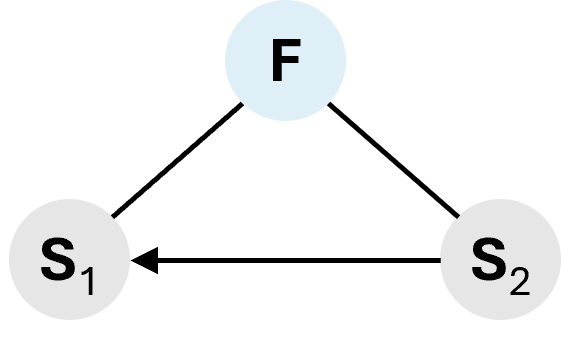
In classical TRIZ, the tool used to identify the substances and fields needed to create a Su-Field of the problem was substance-field analysis. Today, this tool is no longer in use, as key disadvantages identified during CECA provide detailed information for this purpose.
The tool designed for processing the substance-field models (Su-Fields) of problems is the system of 76 standard inventive solutions (SIS), which leads to solution models represented by selected SISs. In some cases, these solutions can also be presented in the form of Su-Fields. Thus, substance-field analysis is the only TRIZ tool where the model of solution can have the same form as a model the problem.

Articles
- Standard inventive solutions (SIS)
- Substance-field analysis
- Substance-field model
Standard inventive solutions (SIS)
Standard inventive solutions (SIS)
Standard inventive solutions (SIS) are a set of 76 typical solution models, to typical problem models that are expressed in the form of substance-field (Su-Field) models.
Overview
The system of standard inventive solutions (SIS) is a collection of 76 typical technical solutions, developed in the form of substance-field models (so called Su-Fields) representing interactions between substances and fields. It serves as a tool for analyzing and generating solutions to engineering problems.
The system was created by Genrikh Altshuller, who, through the analysis of thousands of patents, identified recurring patterns in problem-solving across various technical fields. The history of SIS dates back to the 1970s, when Altshuller and his team developed the first set of 28 standard solutions based on the Su-Field model. The system was further expanded throughout the 1980s, culminating in a set of 76 standards, which Altshuller deemed sufficiently complete. However, he did not rule out the possibility of further expanding the system in the future.
Thus, the list of standard inventive solutions is not finite. Theoretically, new recommendations could be discovered and added, based on emerging technologies and evolving trends in engineering. Nonetheless, the current collection provides a robust foundation for addressing a wide range of technical challenges.
Structure of the system
The system of standard inventive solutions contains 76 SISs, which are organized into five classes. Providing the logical structure facilitates efficient navigation and application of solutions to specific types of engineering problems:
- Class 1: Building and destruction of Su-Fields,
- Class 2: Development of Su-Fields,
- Class 3: Transition to supersystem and microlevel,
- Class 4: Standard inventive solutions for measuring and detecting, and
- Class 5: Standard inventive solutions on application of SISs.
Full list of 76 standard inventive solutions
The following text presents the original content developed by G. Altshuller (including pictures).
Class 1: Building and destruction of Su-Fields
SISs from Class 1 are used to resolve engineering problems by improving interactions and eliminating harmful effects. They are focused on constructing or destroying Su-Field models if the models are incomplete (S1, S2, or F is missing), complete but not working (F is inadequate), or harmful.
The class contains 2 sub-classes and 13 SISs.
1.1. Synthesis of a substance-field system
The main idea of this sub-class is clearly reflected in SIS 1.1.1: for the synthesis of a workable technical system, it is necessary – in the simplest case – to go from incomplete Su-Field to complete Su-Field. Often, constructing the Su-Field encounters difficulties due to various restrictions on the introduction of substances and fields. Standards 1.1.2 through 1.1.8 show typical workarounds in such cases.
1.1.1. Synthesis of a substance-field system
If there is an object that is not easy to change as required, and the conditions do not contain any limitations on introducing substances and fields, solve the problem by synthesizing an SIS, i.e., by introducing the missing element(s).
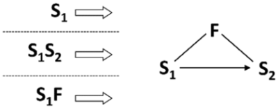
1.1.2. Improving interactions by introducing additives into the objects
If there is a Su-Field that is difficult to be changed, and there are no restrictions on introducing additives into the available substances, the problem is being solved by transition to the internal complex Su-Field, i.e., by introducing an internal additive to S1 or S2. That increases the controllability or adds the necessary properties to the Su-Field. The additive can be added permanently or temporarily.

S1 is a product, S2 is a tool, S3 is an additive. Brackets denote an inner compound bond (an outer compound bond is denoted without brackets).
1.1.3. Improving interactions by introducing additives into the system
If there is a Su-Field that is difficult to be changed, and there are no restrictions on introducing additives into the available substances, the problem is being solved by transition to the external complex Su-Field, i.e., by introducing an external additive to S1 or S2. That increases the controllability or adds the necessary properties to the Su-Field. The additive can be added permanently or temporarily.
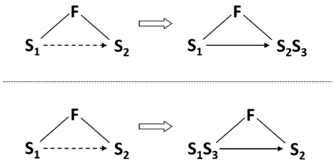
1.1.4. Use the environment to improve interactions
If there is a Su-Field that is difficult to be changed, and there are no restrictions on introducing additives into the available substances, the problem is being solved by introducing an additive that is a part of the environment or the supersystem.
1.1.5. Modify the environment to improve interactions
If the external environment does not contain ready substances required to synthesize a Su-Field, these substances can be obtained by replacing the external environment with another one, or by decomposing the environment, or by introducing additives into the environment.
1.1.6. Providing minimal effect of action
If a minimal (measured, optimal) effect of action is required, but it is difficult or impossible to provide it under the conditions of the problem, use a maximal action (either of a field or a substance) while the excess is then removed. Substance excess is removed by a field, while field excess is removed by a substance. The excess is shown by a double line.

1.1.7. Providing maximal effect of action
If a maximal effect of action on a substance is required and this is not allowed, the maximal action has to be preserved but directed to another substance attached to the first one.

1.1.8. Use the selectively maximal mode
If a selectively maximal action is required (maximal in certain zones, while maintaining the minimal in other zones), the field should be maximal, but:
1.1.8.1. Selectively maximal mode: maximal field
In the first case, we introduce a protective substance where it is necessary to maintain minimal action.
1.1.8.2. Selectively maximal mode: minimal field
In the second case, while having the minimal mode, we selectively introduce substances that locally generate an additional field, for example, thermit compaunds – for thermal action, explosive compaunds for mechanical action.
1.2. Destroy Su-Fields
Sub-class 1.2. includes SISs for destruction of Su-Fields and the elimination or neutralization of harmful effects within them.
The strongest idea of this sub-class is the mobilization of the necessary elements through the use of the available substance-field resources.
Standard 1.2.2 is particularly important. According to it, functions of a new substance are performed by modified substances already present in the system.
1.2.1. Eliminate harmful interaction by introducing a foreign substance
If useful and harmful actions appear between two substances in a substance-field system and there is no need to maintain a direct contact between the substances, solve the problem by introducing a third substance between them. The substance should be free or sufficiently cheap.

The wavy arrow indicates an action that has to be eliminated.
1.2.2. Eliminate harmful interaction by modifying existing substances
If there are useful and harmful actions between two substances, and there is no need to maintain direct contact between the substances, and it is forbidden or inconvenient to use foreign substances, solve the problem by introducing a third substance between the two. In this case, the third substance is to be a modification of the first or second substances.

Note: S3 can be introduced into the system as a ready substance from the supersystem or it can be obtained (by the action of F1 or F2) from S1 or S2. In particular, S3 can be a „void”, bubbles, foam, etc.
1.2.3. Eliminate harmful action of a field by introducing a sacrificial substance
If it is necessary to eliminate the harmful action of a field upon a substance, the problem can be solved by introducing a second substance that draws off upon itself the harmful effect of the field.

1.2.4. Eliminate harmful effects by a new counteracting field
If useful and harmful action appear between two substances in a Su-Field, and a direct contact between the substances must be maintained, the problem can be solved by transitioning to a dual substance-field system — the useful effect is provided by the existing field while a new counteracting field neutralizes the harmful action (or transforms the harmful action into a useful action).

1.2.5. “Turning off” a magnetic field
If it is necessary to destroy a Su-Field with a magnetic field, the problem is solved by using physical effects that are capable of “switching off” ferromagnetic properties of substances (e.g., by de-magnetizing by a mechanical impact or by heating above the Curie point).
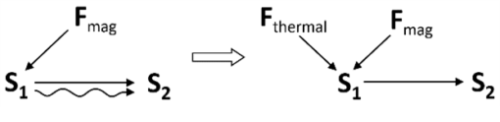
Class 2: Development of Su-Fields
Class 2 of standard inventive solutions is used to improve the efficiency of the engineering system by introducing minor modifications.
This class contains 4 sub-classes and 23 SISs.
2.1. Transition to more sophisticated Su-Field
An increase of the efficiency of Su-Fields can be achieved by the transition from simple Su-Fields to more sophisticated ones – chain and double ones. The modifications are relatively small, while the transition ensures the emergence of new qualities and strengthening of the existing ones, primarily the controllability of the system.
2.1.1. Transition to chain Su-Field
If it is necessary to increase the efficiency of the Su-Field, the problem can be solved by transforming S1 or S2 into an independently controlled Su-Field, thus creating a chain Su-Field.
S3 or S4 can be transformed into another independently controlled Su-Field.
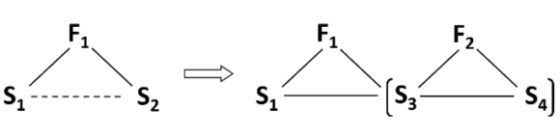
2.1.2. Transition to double Su-Field
If the Su-Field is insufficient and the replacement of its elements is unacceptable, the problem can be solved by introducing a second field, hence constructing a double Su-Field that has higher efficiency.

2.2. Intensification of Su-Fields
The general idea behind six SIS of this sub-class is to increase the efficiency of Su-Fields – simple or more sophisticated – without introducing any new fields or substances. This is achieved by the intensified use of the available substance-field resources.
2.2.1. Transition to more controllable fields
An efficiency of Su-Field can be increased by replacing the uncontrolled (or poorly controlled) field with a controlled (well-controlled) field, e.g., replacing the gravity field with a mechanical, mechanical-electric, etc.
2.2.2. Segmentation of the substance
An efficiency of Su-Field can be improved by increasing the degree of segmentation of S1 or S2.
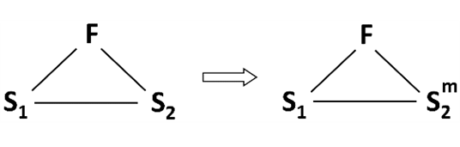
Note:
- The symbol Sm denotes a substance segmented into many small particles (grains of sand, powder, granules, etc.).
- SIS 2.2.1 reflects one of the sub-trends of TESE, i.e, the segmentation of components.
2.2.3. Transition to capillary-porous substance
A special case of substances segmentation is the transition from solids to capillary-porous substances. This transition is performed along the following line:
monolith substance
substance with one cavity
monolith with many cavities (perforated substance)
capillary-porous substance
capillary-porous substance with a certain pore structure (and size)
With the development of this line, the possibility of introducing a liquid substance into cavities-pores and using physical effects increases.

2.2.4. Dynamization of the Su-Field
Efficiency of a Su-Field can be improved by increasing the degree of its dynamization, i.e., by transitioning to a more flexible, rapidly changing structure of the system.
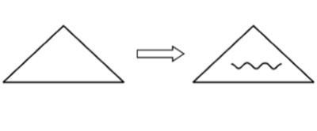
Note: A triangular symbol with a wavy line represents a dynamic Su-Field that changes during its operation.
The dynamization of S2 usually start with introducing a hinge. Further dynamization runs along the line: one hinge -> many hinges -> flexible substance.
The dynamization of F usuall transition from the constant F to pulsating F.
2.2.5. Changing the structure of the field
Efficiency of Su-Field can be increased by transitioning from homogeneous or unstructured field to inhomogeneous field or a field with a special structure (constant or variable in time and space).

Note: The # symbol next to the letter F denotes that the field has a special structure variable in time and space.
If a substance that is a part of the Su-Field or can be a part of the Su-Field mut have a specific spatial structure, the process should be performed in a field that has a structure corresponding to the required structure of the substance.

2.2.6. Changing the structure of the substance
Efficiency of Su-Field can be increased by transitioning from homogeneous or unstructured substance to inhomogeneous substance or a substance with a special structure (constant or variable in time and space).

Note: The # symbol next to the letter S denotes that the substance has a special structure variable in time and space.
If it is necessary to obtain an intensive thermal effect in the certain places of the system (points, lines), exothermic substances should be introduced in these places beforehand.
2.3. Intensification of rhythms coordination
Sub-class 2.3 includes SISs for Su-Fields intensification in particularly economical ways. Instead of introducing or substantially changing substances or fields, the SISs provide for purely quantitative changes – frequencies, sizes, or mass. Thus, a significant new effect is achieved with minimal system changes.
2.3.1. Coordination of rhythms of the field and the substance
Efficiency of Su-Field can be improved by coordination of the frequency of the Field with the natural frequency of the Substance.
2.3.2. Coordination of rhythms of the fields that are used
In more sophisticated Su-Field, the frequencies of the Fields that are used should be coordinated.
2.3.3. Coordination of incompatible or previously independent activities
When two activities, e.g., changing and measuring, are incompatible, one activity can be performed in the pauses of the other. Important: pauses in one action should be filled with the other action.
2.4. Fe-Fields (intensified sophisticated Su-Fields)
Fe-Field is a Su-Field where one of the Substances is segmented, has magnetic properties and at least one Field is electromagnetic.
Intensification can be performed through several typical ways simultaneaously. Su-Fields where the magnetis Substance is segmented is the easiest to intensify.
2.4.1. Transition to Proto-Fe-Field
Efficiency of Su-Field can be improved by using a ferromagnetic Substance (as one piece) and a magnetic Field.
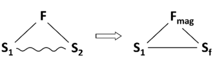
Note: This is the SIS that uses ferromagnetic Substance that is not segmented. We talk about the Proto-Fe-Field and other intermediate states.
This SIS is applicable not only for simple Su-Fields but also to complex (with an additive), as well as for Su-Fields where the additive is a part of the environment.
2.4.2. Transition to Fe-Field
Efficiency of Su-Field can be improved by transition from Su-Field or Proto-Fe-Field to Fe-Field by replacing one of the substances with ferro-particles (or adding ferro-particles like chips, granules, grains, etc.) and using a magnetic or an electromagnetic field.
The controlability grows with the increase of the degree of the ferro-particles fragmentation, so the development of Fe-Fields follows the line:

granules
powder
finely dispersed ferro-particles
The controlability also grows with the increase in the degree of fragmentation of the substance into which the ferro-particles are introduced. The development follows the line:
 monolith substance
monolith substance
grains
powder
liquid

Note:
Transition to Fe-Field can be considered a joint application for two SIS – 2.4.1 (Transition to Proto-Fe-Field) and 2.2.2 (Segmentation of the substance).
Having turned into Fe-Field, the Su-Field repeats the development cycle, however, at a new level, since Fe-Fields can be characterized by high controllability and efficiency. The SISs of sub-class 2.4 can be considered as types of „isotopes” of SISs of sub-classes 2.1-2.3. Singling out Fe-Fields into their own sub-class is justified (at least at this stage of SIS development) by the exceptional practical significance of Fe-Fields. Additionally, Fe-Fields are more precise research tool for studying rougher Su-Fields and predicting their development.
2.4.3. Using ferromagnetic fluids
Efficiency of Fe-Field can be improved by the use of ferromagnetic fluids – colloidal ferro-particles suspended in kerosene, silicone, or water. SIS 2.4.3 can be seen as a last point in the development according to SIS 2.4.2.
2.4.4. Using capillary-porous substances in Fe-Fields
Efficiency of Fe-Fields can be improved by using a capillary-porous structure that is characteristic for many Fe-Fields.
2.4.5. Transition to complex Fe-Field
If it is necessary to increase a controllability of the system by transition to Fe-Field, and the replacement of substances by ferro-particles is unacceptable, the transition is performed by introducing additives to one of the substances, hence creating an internal or external complex Fe-Field.

2.4.6. Transition to Fe-Field using the external environment
If it is necessary to increase a controllability of the system by transition from Su-Field to Fe-Field, and replacing the substance with ferro-particles (or adding additives to the substance) is unacceptable, then the ferro-particles should be introduced into the external environment and control the system by the magnetic field, hence changing the environment parameters (SIS 2.4.3).

Electrorheological fluids controlled by electric fields can also be used as an external environment.
2.4.7. Using physical effects
It is possible to controll Fe-Fields using physical effects.
2.4.8. Dynamization of the Fe-Field
Efficiency of Fe-Field can be improved by increasing the degree of its dimization, i.e., by transitioning to a more flexible, rapidly changing structure of the system.

2.4.9. Changing the Fe-Field structure
Efficiency of Fe-Field can be increased by transitioning from homogeneous field to inhomogeneous one or from an unstructured field or a field with a special structure (constant or variable in time and space).

2.4.10. Coordination of rhythms of the Fe-Field
Efficiency of Proto-Fe-Field and Fe-Field can be improved by coordinating rythms of its elements.
2.4.11. Transition to E-Field (Su-Field with interacting electrical currents)
If the introduction of ferromagnets or magnetization of substances is difficult, the interaction of an external electromagnetic field with the direct contact, or induced currents, or the interaction of these currents with each other should be used.
Note:
- If Fe-Fields are SISs with ferromagnetic particles, then E-Fields are SISs with currents or interacting currents instead of ferromagnetic particles.
- Development of E-Field – similar to Fe-Fields – repeats the general line of Su-Field evolution:

simple E-Field
complex E- Field
E-Field based on an external environment
dynamization
segmentation/structurization
rhythm coordination
2.4.12. Using electro-rheological liquids
A special type of E-Fields are Su-Fields with electro-rheological suspension (fine non-conducting but electrically active particles), with controlled viscosity. If the ferromagnetic fluids cannot be used, the electro-rheological suspension can be applied.
Class 3: Transition to supersystem and microlevel
Class 3 of standard inventive solutions applies to the engineering systems which performance is insufficient. Their efficiency is improved by developing solutions on the different system levels, like the level of supersystem or the microlevel.
This class contains 2 sub-classes and 6 SISs.
3.1. Transition to bi- and poly-systems
Along with the internal improvement (SISs of Class2), there is a line of external development: at any stage of the internal development, the system can be intergrated with the supersystem components obtaining a new quality.
3.1.1. Transition to bi- and poly-systems
At any stage of the development, efficiency of Su-Field can be increased by the integration of the system with another system (or systems) into a more sophisticated bi-system or a poly-system (system transition 1a).
3.1.2. Development of links in bi-systems and poly-systems
Increasing the efficiency of the synthesized bi-systems and poly-systems can be achieved primarily through the development of links between elements of Su-Field.
The newly developed bi-systems and poly-systems often have „no links”, that is, they are just a „pile” of components. The development is aimed at strengthening linking. On the other hand, elements in newly created systems are sometimes connected by rigid links. In these cases, the development is aimed at increasing the degree of dynamization of links.
no links
rigid link
flexible link
field link
3.1.3. Increasing the difference between the elements of bi-systems and poly-systems
The efficiency of bi-systems and poly-systems increases with an increase in the difference between the elements of Su-Field (system transition 1b):
identical elements
elements with shifted characteristics
different elements
inverse combinations of the „element and anti-element”
3.1.4. Trimming of bi-systems and poly-systems
Efficiency of bi-systems and poly-systems can be improved by Trimming. Completely trimmed bi-systems and poly-systems become monosystems again. The cycle can be repeated.
3.1.5. Opposite properties of the system and its parts
Efficiency of bi-systems and poly-systems can be improved by distributing opposite properties in the system and among its parts. A two-level system is used in which the entire system has property C, and its parts (particles) have property anti-C (system transition 1c).
3.2. Transition to microlevel
There are two ways of system transition:
- the transition to the supersystem („the way up” – SISs of subclass 3.1),
- the transition to microlevel („the way down” – SISs of subclass 3.2).
3.2.1. Transition to microlevel
At any stage of development, the efficiency of the system can be improved by system transition 2: from the macro level to the micro level, when the system or its part is replaced by a substance capable of performing the required action when interacting with the field.
Class 4: Standard inventive solutions for measuring and detecting
Class 4 of standard inventive solutions applies to problems of measuring or detecting.
This class contains 5 sub-classes and 17 SISs.
4.1. Bypasses
If it is necessary to measure or detect, it is recommended that the principle of operation be changed in such a way that there is no need to measure or detect, maintaining the necessary accuracy and cost.
4.1.1. Modifying the system so there is no need to measure or detect
If it is necessary to measure or detect, it is recommendd that the system be changed in such a way that there is no need to measure or detect.
4.1.2. Measuring a copy or an image
If the problem of detection or measurement cannot be solved using SIS 4.1.1, it is recommended that the direct operation on the object be replaced with operations on its copy. For example, instead of directly measuring the logs loaded on the railway platform, the measurement is done from a photo taken on a specific scale.
4.1.3. Successive change detection
If the problem of detection or measurement cannot be solved using SISs 4.1.1 or 4.1.2, it is recommended to turn it into a successive change detection task.
4.2. Creating the measurement Su-Field
When we create Su-Fields for measurement, the strategy should be similar to the case as we create a Su-Field for improvement: complete Su-Field by introducing the missing substances or fields. The difference is that the output ot the measurement Su-Field is a field.
4.2.1. Creating the measurement Su-Field
If a non-Su-Field is difficult to detect or measure, the problem can be solved by creating a simple or double Su-Field with an output field.

4.2.2. Transition to the complex measurement Su-Field
If the system (or part of it) is difficult to detect or measure, the problem can be solved by transition to the internal or external complex Su-Field, by introducing easily detectable additives (marks).
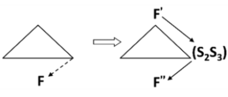
4.2.3. Transition to the measurement Su-Field based on the external environment
If the system is difficult to detect or measure at some point in time and it is impossible to introduce additives which create an easily detectable and easily measured field, these additives should be introduced into the external environment so that the change in the state of the system can be assessed.
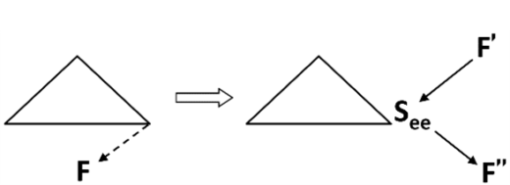
4.2.4. Utilizing resources of the environment
If it is impossible to introduce the additives into the external environment (according to SIS 4.2.3), these additives can be obtained by using the resources of the environment, e.g., by decomposing it or changing its physical state (for example, gas or vapor bubbles obtained by electrolysis, cavitation, or other methods).
4.3. Intensifying measurement Su-Fields
The measurment Su-Field can be intensified by applying physical effects and by coordinating the rhythm.
4.3.1. Using the physical effects
The efficiency of detecting or measuring the Su-Field can be improved by using physical effects.
4.3.2. Using the resonance of the controlled object
If changes in the system cannot be detected or measured directly and it is impossible to pass the field through the system, the problem can be solved by inducing resonance oscillations in the whole system or a part of it. Changing the oscillations frequency can help to identify changes in the system.
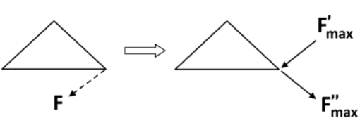
4.3.3. Using the resonance of the integrated object
If it is not possible to apply SIS 4.3.2, the system condition can be assessed using the change of the natural frequency of an object (in the external environment) integrated with the controlled system.
4.4. Transition to measurement Fe-Fields
Measurement Su-FIelds strongly tend to transform into Fe-Fields.
4.4.1. Transition to measurement Proto-Fe-Fields
Su-Fields with non-magnetic fields tend to transform into Proto-Fe-Fields, that is, Su-Fields with a magnetic substance and a magnetic field.
4.4.2. Transition to measurement Fe-Field
If it is necessary to increase the efficiency of detection or measurement by Proto-Fe-Field or Su-Field, it is necessary to go to Fe-Field. One of the substances can be replaced with ferromagnetic particles or the ferromagnetic additives can be used, then the magnetic field can be detected or measured.

4.4.3. Transition to complex measurement Fe-Field
If it is necessary to increase the efficiency of detection or measurement of the system by transition to Fe-Field, and replacing substances with ferromagnetic particles is impossible, then the complex Fe-Field should be created by introducing additives to the substance.

4.4.4. Transition to measurement Fe-Field based on external environment
If it is necessary to increase the efficiency of detection or measurement of the system by transition from Su-Field to Fe-Field, and the introduction of ferromagnetic particles is impossible, then the ferromagnetic particles should be introduced into the external environment.
4.4.5. Using the physical effects
If it is necessary to increase the efficiency of detection or measurement of the system, the scientific effects should be used, for example the Curie point, Hopkinson or Barkhausen effects, magnetoelastic effect, etc.
4.5. Direction of measurement Su-Fields development
The development of measurement Su-Fields is performed through the usual system transitions, but it also has its specific features.
4.5.1. Transition to measurement bi- and poly-systems
At any stage of development, the effectiveness of the measurment Su-Field can be increased by transition to a bi-system or a poly-system.
4.5.2. Transition to the measurement of derivatives
Measurment Su-Fields are developing in the floowing direction:
function measurement
measurement of the first derivative of the function
measurement of the second derivative of the function
Class 5: Standard inventive solutions on application of SISs
Class 5 of standard inventive solutions gives recommendations as to how to introduce new substances, fields or scientific effects more effectively when applying SISs in the four previous classes. It provides “helpers” to satisfy constraints of the project.
This class contains 5 subclasses and 17 SISs.
5.1. Specifics of introducing substances
When creating, restructuring, or destroing Su-Fields, it is often necessary to introduce new substance. That will deacrease the ideality of the system. Therefore, substances must be „introduced without introducing” and various bypasses should be used.
5.1.1. Bypass
If it is necessary to introduce a substance into the system, and this is prohibited by the problem constraints or is unacceptable due to the operating conditions, then bypasses should be used.
5.1.1.1. Using a void instead of substance
5.1.1.2. Using a field instead of substance
5.1.1.3. Using an external additive instead of an internal one
5.1.1.4. Using very small doses of a particularly active additive
5.1.1.5. Using very small doses of a usual additive, but concentrated in separate parts of the object
5.1.1.6. Using an additive for some time
5.1.1.7. Instead of an object, use its copy (model) into which an additive can be introduced
5.1.1.8. Using the additive in the form of a chemical compound, which later released
5.1.1.9. The additive is obtained by decomposition of an external environment or the object itself, for example, by electrolysis, or by changing the state of aggregate of the external environment or the part of the object
5.1.2. Separating the product into interacting parts
If it is difficult to transform Su-Field and the problem conditions do not allow to replace the tool or to introduce additives, use the product instead of the tool, dividing it into parts that interact with each other.
5.1.3. Using a substance for a limited time
After the action, the substance introduced into the system should disappear or become indistinguishable from the substance that has previously been in the system or in the external environment.
5.1.4. Using inflatable structures and foam
If it is necessary to introduce a large amount of a substance, and this is prohibited by the system constraints or is unacceptable due to the operating conditions, use a „void” in the form of inflatable structures or foam instead of the substance.
5.2. Introducing fields
When creating, restructuring, or destroing Su-Fields, it is often necessary to introduce new fields. In order not to complicate the system, SISs of subclass 5.2 should be used.
5.2.1. Using the existing fields
If it is necessary to introduce a field into the Su-Field, first, the existing fields should be used. The substances of the Su-Field are the carriers of those fields.
5.2.2. Using the field of the external environment
If it is necessary to introduce a field into the Su-Field, and it is not possible according to SIS 5.2.1, use the fields available in the external environment.
5.2.3. Using existing substances as field sources
If it is necessary to introduce a field into the system, and it is impossible according to SISs 5.2.1 and 5.2.2, use the fields that can be generated by the substances present in the system or external environment.
5.3. Using phase transitions
Contradictory demands for introduced substances and fields can be satisfied using phase transitions.
5.3.1. Substituting the phase state of the substance
The efficiency of the substance application can be increased without introducing other substances through the phase transition 1, i.e., by changing the state of aggregate of the existing substances.
5.3.2. The dual phase-state of the substance
„Dual” properties can be provided by phase transition 2, i.e., the use of substances capable of changing from one phase state to another, depending on the operating conditions.
5.3.3. Using phenomena accompanying the phase changes
The efficiency of the system can be improved by phase transition 3, i.e., the use of phenomena accompanying the phase transition.
5.3.4. Transition to the two-phase state of the substance
The „dual” properties of the system can be provided by a phase transition 4 – replacement of a single-phase state by a two-phase state.
5.3.5. Using interactions between parts (phases) of the system
The system efficiency obtained as a result of phase transition 4 can be increased by introducing an interaction (physical, chemical) between parts (or phases) of the system.
5.4. Specifics of using the scientific effects
Many SISs provide for the use of scientific effects or can be used together with them. In this case, it is necessary to consider some techniques that increase the effectiveness of the scientific effects application.
5.4.1. Using the reversible physical transformations
If an object must periodically be in different physical states, then the transition should be accomplished by the object itself by means of reversible physical transformations, e.g., phase transitions, ionization-recombination, dissociation-association etc.
5.4.2. Strengthening the output field
If a strong output action is required while the input action is weak, the converter-substance should be brought to a near critical state. Energy is stored in the substance and the input signal acts as a „trigger”.
5.5. The experimental SISs
5.5.1. Obtaining the substance particles by decomposition
If particles of the substance (i.e., ions) are needed to solve the problem, and their direct generation is impossible due to the problem constraints, then the required particles must be obtained by destroying a substance of a higher structural level (i.e., molecules).
5.5.2. Obtaining the substance particles by combining
If particles of the substance (i.e., molecules) are needed to solve the problem and it is impossible to obtain them directly or according to SIS 5.5.1, then the required particles have to be generated by completing or combining particles of a lower structural level (i.e., ions).
5.5.3. The simplest methods to obtain the substance particles
When applying SIS 5.5.1, the simplest way is to destroy the nearest higher „whole” or „excess” (negative ions) level, while when using SIS 5.5.2, the simplest way is to complete combining the nearest lower „non-whole” level.
REFERENCES
- G. Altshuller: Find an Idea. Introduction to the theory of inventive problem solving. Novosibirsk.: Nauka Publishers, 1986, ISBN 5-02-029265-6
Articles
- Substance-field analysis
- Substance-field model
Substance-field analysis
Substance-field analysis
Substance-field analysis is a part of standard inventive solutions application that models a problem in the form of a substance-field model.
Overview
In classical TRIZ, substance-field analysis was used to identify the components (substances and fileds) necessary to model a problem in the form of a Su-Field. However, since cause-effect chain analysis (CECA) became widely used in the analytical phase of projects, this tool has fallen out of common use.
Key disadvantages identified through CECA clearly point to the substances and fields that form the Su-Field of the problem.
Similar to contradictions, the substance-field analysis is used for problem modeling. The tool designed for processing the substance-field models (Su-Fields) of problems is the system of 76 standard inventive solutions (SIS), which leads to solution models represented by selected SISs. In some cases, these solutions can also be presented in the form of Su-Fields. Thus, substance-field analysis is the only TRIZ tool where the model of solution can have the same form as a model the problem.

Basic assumption in the approach is that a minimally functioning system must consist of 3 basic elements:
1. 2 substances (S), i.e., objects with a rest mass involved in the system, and
2. a field (F), i.e., entity without a rest mass that establishes an interaction between substances.
The substances are closely tied to the key problem that needs to be solved. They can refer to microscopic objects, single components, or the entire technical system. The field is typically one of the types selected from the MATChEM model.
Substance-field model
Substance-field model
Substance-field model (Su-Field model, Su-Field) is an abstract model of a problem and potential solutions (when possible) formulated in terms of interactions between substances and fields.
Overview
Substance-field models (Su-Fields) are inspired by chemistry, specifically the way of representing molecules that reflects their composition and bonds. Similarly, Su-Fields aim to explain relationships and functions in technical systems.
Building substance-field models is performed within substance-field analysis.
Basic assumption in the approach is that a minimally functioning system must consist of 3 basic elements:
1. 2 substances (S), i.e., objects with a rest mass involved in the system, and
2. a field (F), i.e., entity without a rest mass that establishes an interaction between substances.
The substances are closely tied to the key problem that needs to be solved. They can refer to microscopic objects, single components, or the entire technical system. The field is typically one of the types selected from the MATChEM model.
Structure of a Su-Field
Usually, the model is depicted by a diagram where the substances (S) and the field (F) are shown as nodes, and the interaction is presented as connecting lines or arrows.
Symbols of interactions used in Su-Field models are similar to those used in function modeling for devices:
The examples can be as follows:

Types of Su-Fields
Although the substance-field models can represent both problems and (sometimes) solutions, these models are not the same, therefore they are differentiated into:
- Su-Fields of problems, and
- Su-Fields of solutions.
Su-Fields of problems
When modeling a problem with Su-Field, it is essential to include only those substances and fields that are directly related to the key problem requiring a solution.
Substance-field model of the problem may have 1, 2 or 3 elements. Building problem models with more than 3 elements, is incorrect.
The following types of Su-Fields are used to model problems:
1. incomplete Su-Field (needs to be completed),
2. insufficient, i.e. complete, but ineffective Su-Field (needs to be improved), and
3. harmful Su-Field (the harmful or excessive action has to be eliminated).
Incomplete Su-Field
Incomplete Su-Field is a Su-Field representing a model of a problem of lacking one substance, or a field, or substance and a field.
The examples of incomplete Su-Fields can be the following:
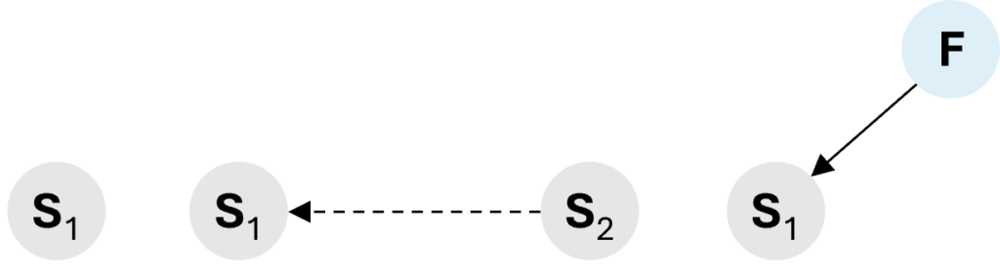
Insufficient Su-Field
Insufficient Su-Field is a Su-Field representing a problem model, which is complete but does not work.
The insufficient Su-Field usually models an issue emerging when substance 1 does not respond to the field generated by substance 2.

Harmful Su-Field
Harmful Su-Field is a Su-Field which represents a model, in which at least one interaction is harmful or excessive (excessive = normal + harmful excess).
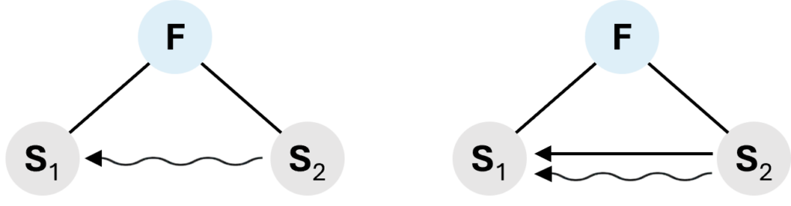
Su-Fields of solutions
SuFields of solutions may have 3 or more elements.
Examples of solution models can be the following:
1. complete Su-Field,
2. complex Su-Field (internal and external),
3. chain Su-Field,
4. double Su-Field,
5. measurement Su-Field.
Complete Su-Field
Complete Su-Field represents a model of a solution in which at least two substances and a field are present to create a working technical system or a subsystem.
Complex Su-Field
Complex Su-Field is a complete Su-Field with an extra substance (often in the form of an additive) that readily responds to the existing field.

This type of models is used in class 1.1 (synthesis of Su-Fields), class 2 (development of Su-Fields), and class 4 (standard iInventive solutions for detecting and measuring).
NOTE! Complex Su-Fields should not be confused with the double and chain Su-Fields. These are different types of models.
Chain Su-Field
Chain Su-Field is a combination of two or more Su-Fields where one substance participates in two Su-Fields.
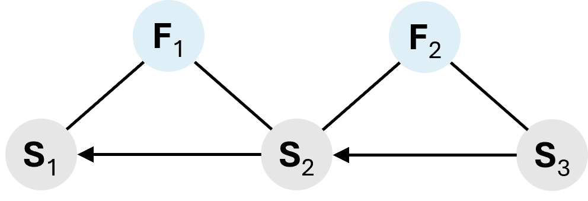
This type of models is used in class 2 (development of Su-Fields).
Double Su-Field
Double Su-Field is a Su-Field where two different fields provide interactions between the substances (one substance acts on the second substance with two fields).
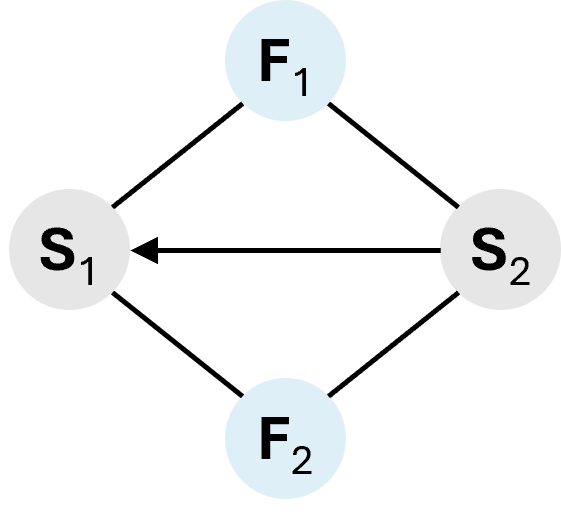
This type of models is used in class 2 (development of Su-Fields).
Measurement Su-Field
Measurement Su-Field is a special type of a Su-Field which is used to present models of inventive problems where measurement or detection is required in terms of substance-field analysis. Its uniqueness lies in the fact that it is the only model with 2 fields and 1 substance (input field > substance > output field).
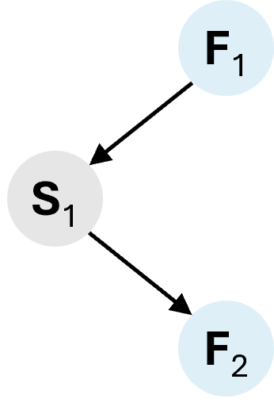
This type of models is used in class 4 (SISs for detecting and measuring).
Contradictions
Contradictions
Overview
Contradictions are parametric models of key problems identified during problem-identification stage of the project. In modern TRIZ, two types of contradictions are used:
- engineering (technical) contradiction, and
- physical contradiction.
The engineering contradiction involves two different parameters. It represents a situation where improving one parameter leads to the deterioration of another.
The physical contradiction, on the other hand, pertains to one parameter with two justified but conflicting requirements imposed on it.
Relation between the engineering and physical contradiction
Engineering and physical contradictions are directly related as both are formulated from IF-THEN-BUT format.
- in the engineering contradiction, the improving parameter is placed in the line THEN, while the worsening parameter – in the line BUT;
- the physical contradiction concerns the parameter from the line IF, while the contradictory demands can be found in the line THEN.
The physical contradiction can be formulated based on the engineering contradiction in the following steps:
- formulate an engineering contradiction,
- go to the line IF of the contradiction; the parameter/action/property mentioned in the line IF is the one around which the physical contradiction is formulated,
- the line THEN of the engineering contradiction is the justification of one of the requirements of the physical contradiction;
- the line BUT can prompt the justification of the other requirement (inverting the statement in the line BUT provides the justification).
To formulate the physical contradiction, creating an inverted (alternative) engineering contradiction beforehand can also be very helpful.
The conversion also works in the opposite direction. From each physical contradiction, two engineering contradictions can be derived: the basic and the inverted (alternative) one.
Resolving the contradictions
For both types of contradictions, the 40 inventive principles are the recommended models of solutions. However, the ways leading to the specific principles are different:
- for the engineering contradiction, it is the contradiction matrix, also referred to as Altshuller matrix.
- for the physical contradiction, it is the algorithm for resolving physical conradictions.
Aditionally, function-oriented search (FOS), database of scientific effects, and clone problems application can be used for physical contradiction.
Articles
- Engineering (technical) contradiction
- Contradiction matrix
- Typical parameters
- Contradiction matrix
- Physical contradiction
- Algorithm for resolving physical contradictions
- Inventive principle
Engineering (technical) contradiction
Engineering (technical) contradiction
Engineering contradiction (EC), also called technical contradictions (TC), is a parametric model of the problem in which an attempt to improve one parameter of the engineering system leads to worsening of another parameter.
Overview
When solving key problems, methods or technologies are often used that, while improving a specific parameter of a technical system, simultaneously lead to the deterioration of another parameter.
Modeling such a situation as an engineering contradiction is the first step toward solving the problem in a way that not only improves the first parameter but also avoids worsening – or even potentially improves – the second parameter as well.
Models of solutions for engineering contradictions are inventive principles. The tool that is used to translate the engineering contradiction into inventive principles is contradiction matrix also referred to as Althuller matrix.
Formulating the engineering contradiction
An engineering contradiction should be formulated using the IF-THEN-BUT format. That formula provides two parameters that constitute the engineering contradiction for solving:
- in the line THEN, the parameter that has to be improved to resolve the problem,
- in the line BUT, the parameter that deteriorates when the technique / approach mentioned in line IF is applied.

To properly formulate a contradiction, it is helpful to follow a specific order of providing the information. Typically, we start with the THEN position, then proceed to IF, and finish with BUT. The red numbers in the picture above indicate the order of filling.
Let us consider a simple example of a key problem: the table is not strong enough. One way to strengthen it might be by adding additional reinforcing elements, but these increase its weight. The engineering contradiction will be formulated as follows:
Usually, a key problem can be modeled using more than one engineering contradiction. This is typically due to the fact that various technologies can traditionally be applied to solve the problem.
For each technology, action, parameter, etc., proposed in the IF row, a separate contradiction should be created.
For example, to solve the problem of a weak table, various approaches can be applied: using a stronger material, increasing the thickness of the tabletop, or shaping it into a slightly domed form. Each of these approaches has its own implications, often leading to the deterioration of another parameter. Therefore, a technical contradiction should be formulated for each approach.
Alternative engineering contradiction
For each engineering contradiction, an alternative (opposite or inverted) one can be formulated. The following example presents a procedure for creating it:
The alternative contradiction should contain the same parameters as the base one, but the problem it models is different. Since the contradiction matrix is not symmetrical, the inverted engineering contradiction supports generating more ideas and can lead to solutions that help to achieve the goal of the project. It is also very helpful in formulating the physical contradiction.
The algorithm for an engineering contradiction
An algorithm to deal with the engineering contradiction is the following:

Articles
- Contradiction matrix
- Typical parameters
Contradiction matrix
Contradiction matrix
Contradiction matrix, also referred to as Altshuller matrix, is a matrix that provides a systematic access to the inventive principles for solving engineering contradictions.
Overview
Contradiction matrix is a problem-solving tool that connects a problem modeled as an engineering contradiction with the statistically most frequently used inventive principles, which are generalized solution models for contradictions.
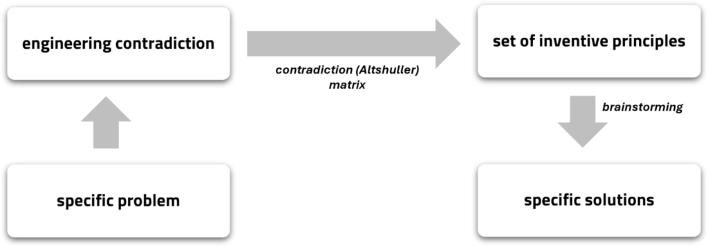
The traditional Altshuller matrix is a table from which the numbers of inventive principles are read. For user convenience, we have designed an interactive tool that significantly simplifies the process. Click the button below to use it.
CONTRADICTION MATRIX
After converting the two specific parameters from the contradiction into the typical parameters, a set of recommended inventive principles can be found in the matrix. Once the set of the inventive principles is identified, brainstorm around them to develop a solution.
Note that the principles listed in a given cell of the matrix are the statistically most frequently used ones, but this does not mean that solutions cannot be found outside of them. Therefore, if the results obtained from the matrix are unsatisfactory, it is worth exploring and considering other principles.
Structure of the contradiction matrix
A traditional contradiction matrix contains 39 typical parameters on both the vertical and the horizontal axes:
- the vertical axis represents a list of parameters that need to be improved to resolve the problem,
- the horizontal axis represents a list of parameters that are worsening when we introduce specific technology.
The parameters are listed in the same order, both in the rows and in the columns.
On the crossing of the corresponding rows and columns, there are cells containing numbers of recommended inventive principles.
The following picture presents an example:

The boxes in the matrix can contain 4, 3, 2, or 1 principle, some of them are empty.
The order of principles within the cells does not indicate any preferences. All recommended principles are equally important, and their sequence simply reflects the fact that Altshuller added them as he discovered them during his research.
The empty cells in the matrix indicate that no inventive principle has been identified as statistically more frequently used than others. In such cases, any of the 40 principles can be applied equally, without preference.
The contradiction matrix is not symmetrical. Improving parameter A, while parameter B is deteriorating, results in different inventive principles than improving parameter B and deteriorating A.
Articles
- Typical parameters
Typical parameters
Typical parameters
Typical parameters is a limited set of the pre-defined generalized parameters that typically need improvement in the engineering system, used in the contradiction (Altshuller) matrix.
Overview
To work with the contradiction matrix, the improving and worsening parameters in an engineering contradiction must be expressed in the form of typical parameters included in the matrix. Due to the diversity of engineering fields, reducing the specific parameters to typical ones is a fundamental aspect of the universality of the Altshuller matrix
Sometimes, a specific parameter may already align with a standard parameter. However, if it does not, conversion is necessary. This applies to both the vertical and horizontal axes of the matrix.
Below, we have provided a complete list of 39 standard parameters, along with examples of specific parameters most commonly associated with them. Keep in mind that the list of specific parameters is not definitive, and each problem should be approached individually.
Keep in mind that our examples are merely suggestions. If you believe your specific parameters can be better expressed using other typical parameters, feel free to do so. This may only increase the number of solution concepts generated.
A good practice is to create several combinations of different standard parameters that fit the formulated contradiction and use the contradiction matrix for each pair. This results in multiple sets of recommendations, each of which should be considered as a potentially best guideline.
39 typical parameters
Note that in several cases, the typical parameters distinguish between a moving object and a stationary object. A moving object is one that stays in motion or changes position relative to another object involved in the problem. This movement can vary – it might be caused by external forces or happen on its own, and it can be linear, rotational, very small, or cover a large distance. Common examples include items designed to be portable. In contrast, the stationary object remains completely still relative to the other object in the problem, with no movement between them.
- Weight of moving object
The mass or force of gravity exerted – by pressure or suspension – by a moving object.
Can be related to: ballast, gravity, load, buoyant force, heaviness, mass, burden, heft, pressure, bulk, lightweight, tonnage, floating, lightness.
- Weight of stationary object
The mass or force of gravity exerted – by pressure, suspension, or the surface on which it rests – by a stationary object.
Can be related to: ballast, gravity, load, buoyant force, heaviness, mass, burden, heft, pressure, bulk, lightweight, tonnage, floating, lightness.
- Length of moving object
Any linear or angular dimension relating to a moving object, not necessarily the longest.
Can be related to: altitude, distance, range, amplitude, extent, span, breadth, gap, stretch, circumference, girth, spread, cross measure, height, tolerance, depth, length, width, diameter, radius.
- Length of stationary object
Any linear or angular dimension relating to a stationary object, not necessarily the longest.
Can be related to: altitude, distance, range, amplitude, extent, span, breadth, gap, stretch, circumference, girth, spread, cross measure, height, tolerance, depth, length, width, diameter, radius.
- Area of moving object
Characteristics related to surfaces or surface area of a moving object, either internal or external. They may include the square measure of the surface of the object, the part of a surface occupied by the object, or a contact area of the objects.
Can be related to: contact area, porosity, space, dimensions, region, square, expanse, section, surface, field, sector, territory, point-contact, size, zone.
- Area of stationary object
Characteristics related to surfaces or surface area of a stationary object, either internal or external. They may include the square measure of the object’s surface, the part of a surface occupied by the object, or a contact area of the objects.
Can be related to: contact area, porosity, space, dimensions, region, square, expanse, section, surface, field, sector, territory, point-contact, size, zone.
- Volume of moving object
Any characteristics related to the cubic measure of space occupied by the moving object or the space around it.
Can be related to: 3D dimensions, compactness, size, amount / quantity of substance, cubic measure, shrinkage, flow amount, space, aggregate, oversize, swelling, bulk, room, void, capacity.
- Volume of stationary object
Any characteristics related to the cubic measure of space occupied by the stationary object or the space around it.
Can be related to: 3D dimensions, compactness, size, amount / quantity of substance, cubic measure, shrinkage, flow amount, space, aggregate, oversize, swelling, bulk, room, void, capacity.
- Speed
The velocity or speed of an object or the rate of any kind of process or action in time, focused on issues of dynamics rather than output of product (see: 30. Productivity). The speed may be relative or absolute, linear, or rotational.
Can be related to: acceleration, rapidity, slowness, deceleration, rate, speedup, latency, rush, takt time, pace, slowdown, tardiness.
- Force (Intensity)
Force measures the interaction between systems. In Newtonian physics, force = mass x acceleration. Here, it is any interaction that is intended to change an object’s condition. Can be linear or rotational.
Can be related to: action, intensity, stiction, change of momentum, lift, stress, momentum, load, tension, drag, thrust, effort, pull, torque, friction, push, traction, grip, reaction, twist, inertia, shear, voltage.
- Stress or Pressure
Force exercised per unit area. Stress is the effect of forces on an object. Stresses can be tensile or compressive, static, or dynamic. Parameter also includes strain provided length is not the main issue.
Can be related to: chemical fatigue, overload, strain, compression, plasticity, tension, creep, stacking-load weight, thermal fatigue, elasticity, vacuum, fatigue.
- Shape
The internal or external contour or profile of a component or assembly required for ergonomic or functional rather than aesthetic reasons.
Can be related to: asymmetry, line, roughness, contour, outline, silhouette, curvature, pattern, smoothness, form, porosity, symmetry, flatness, profile, unevenness, geometry.
- Stability of the object composition
The wholeness or integrity of the system; relation of its constituent elements. It applies to both macro (component) and micro (atomic) level parameters.
Can be related to: chemical decomposition, delamination, integrity, dissociation, oxidation, consistency, distortion, rusting, deformation, droop, solidity, desired/undesired, entropy, structure, homogeneity, sustainability, inertness, wear, instability.
- Strength
The degree to which an object is able to resist change in response to a mechanical force. Break resistance. May be elastic limit, plastic limit, or final strength; stretching or compression; linear or rotary.
Can be related to: bond, fatigue, rigidity, creep, hardness, robustness, distortion, join, stillness, droop, resistance, tolerance.
- Duration of action of moving object
The time that the moving object or the system needs to perform the action. The duration of action is arbitrary – from a few milliseconds to few hours, to several years or even more.
The parameter differs from 35. Reliability, which is related to the time to system failure – in this case it is specifically only the duration aspect.
Can be related to: (time) countdown, natural frequency, reaction-time, delay, mode, response-time, frequency, period, service life, interval, phase, time-span, life, rate, time-consumption.
- Duration of action of stationary object
The time that the non-moving object or the system needs to perform the action. The duration of action is arbitrary – from a few milliseconds to few hours, to several years or even more.
The parameter differs from 27. Reliability, which is related to the time to system failure – in this case it is specifically only the duration aspect.
Can be related to: (time) countdown, natural frequency, reaction-time, delay, mode, response-time, frequency, period, service life, interval, phase, time-span, life, rate, time-consumption.
- Temperature
Measured or perceived thermal condition of the object or the system. Includes other thermal parameters, that affect the rate of change of temperature.
Can be related to: boiling point, isolation, radiation, cooling, freezing/melting point, thermal capacity, heating, thermodynamic equilibrium, hot, overheating.
- Illumination intensity
The light flux per unit area, as well as all other characteristics related to the color or quality of light, etc. The parameter applies to the light source.
Can be related to: colour, light spectrum, saturation, contrast, lustre, shade, darkness, matt, shiny, emissivity, obscuration, tone, invisibility, reflection, transparency, light intensity, reflectivity, visibility.
- Use of energy by moving object
A measure of a moving object’s capacity to perform work. This parameter focuses on the actual amount of energy needed to perform a specific job, not on the efficiency of its use. It concerns the use of energy provided by the supersystem (e.g., electricity or heat).
Can be related to: power consumption, cooling, heat-input, calories, current, heating, calorific value, fuel consumption.
- Use of energy by stationary object
A measure of a stationary object’s capacity to perform work. This parameter focuses on the actual amount of energy needed to perform a specific job, not on the efficiency of its use. It concerns the use of energy provided by the supersystem (e.g., electricity or heat).
Can be related to: power consumption, cooling, heat-input, calories, current, heating, calorific value, fuel consumption.
- Power
The rate at which work is performed. The rate of use of energy. Rate of energy output.
Can be related to: action intensity, horse-power, voltage, current, shaft horse-power, Wattage, energy.
- Loss of energy
Loss or waste of energy that does not contribute to the performance of any useful function. It can be partial or complete, permanent, or temporary.
Can be related to: cooling down, inefficiency, resistance, damping, interference, slowing down, dissipation, isolation, stiction, friction, long flow, turbulence, heat loss, muting, weakening, weariness.
- Loss of substance
Loss or waste of elements of a system or its surroundings – substances, materials, parts, sub-systems, products, fields, etc. Can be partial or complete, permanent, or temporary.
Can be related to: abrasion, erosion, wear, absorption, evaporation, waste, corrosion, leakage, poorly transferable flow of substance, degradability, obstruction, deposition, oxidation, desorption, seal.
- Loss of information
Loss or waste of data or access to data in or by a system. Includes sensory data associated with any of the 5 senses – visual, auditory, kinesthetic, olfactory, or gustatory (VAKOG). Can be partial or complete, permanent or temporary.
Can be related to: aroma, jamming, obscuration, corruption, lack of knowledge, opacity, communication issue, lack of feedback, poorly transferable information flow, measurement inaccuracy, grey zone, white spot, interference, misunderstanding.
- Loss of time
Time (duration of an activity) inefficiencies. Improving the loss of time means reducing the time taken for the activity. Can be partial or complete, always, or occasional.
Can be related to: bottleneck, slack time, time lag, delay, stagnant zone, waiting time, duplication of effort, time lost on redundant or unnecessary activities, reaction-time, response-time, idle time, latency.
- Quantity of substance
The amount, quantity, or number of a system’s materials, substances, parts, fields, or sub-systems. The “substance” is used here in its most general form and includes any physical or temporal “thing”.
Can be related to: absorbency, density, particle, amount, flesh, stuff, mass, flow amount, volume, count, matter.
- Reliability
A system’s ability to perform its intended functions in predictable ways and conditions. Also includes durability and issues related to the performance or degradation in performance of an object or system over long periods.
Can be related to: durability, life-cycle, Mean-Time-Between-Overhaul (MTBO) failure-rate, Mean-Time-Between-Failure (MTBF) maintenance, in-service, integrity, life, service-time, through-life-cost.
- Measurement accuracy
Degree of precision or accuracy. The closeness of a measured value to an actual value of a property of a system. Reducing the error in a measurement improves the accuracy of the measurement.
Can be related to: consistency, median, punctuality, error, mode, standard deviation, exactness, precision, tolerance, mean.
- Manufacturing precision
The extent to which the actual characteristics of the system or object match the specified or required characteristics.
Can be related to: accuracy, quality assurance, surface finish, exactness, repeatability, tolerance, indefiniteness, sigma level, variation (6 Sigma), looseness, standard deviation.
- Object-affected harmful factor
This parameter is designed as a catch-all for any form of action or phenomenon in or around a system that manifests itself as a harmful effect on something in the system. Susceptibility of a system to externally generated (harmful) effects.
Can be related to: adhesion, mold impact, sun-damage, contamination, oxidization, vulnerability, corroding, resilience, warpage, dust ingestion, undesired effect, weakening, erosion, sticking, weather impact.
- Object-generated harmful factor
A harmful effect that reduces the performance or quality of the operation of an object or system. These harmful effects are generated by the object or system as part of its operation. It can also be any form of pollution or emission to the environment generated by an object or system.
Can be related to: abrasion, noise, undesirable side effect, contamination, pollution, fumes emission, radioactivity, unburned hydro-carbons waste, infection, radiation, greenhouse gases emission, toxic by-products.
- Ease of manufacture
Issues related to manufacture, fabrication, and assembly of the object or system. The degree of facility, comfort or effortlessness in manufacturing or fabricating the object/system.
Can be related to: assembly, degree of automation / robotization, machine-setting time, convenience of manufacture, tool-change, unchangeableness.
- Ease of operation
The extent to which the user is able to learn to operate, to operate, or to control the system, object, or process. Convenience of use.
The process is NOT easy if it requires a large number of people, a large number of steps, special tools, etc. In opposite to „difficult” processes, the „easy” processes are high-efficient and easy to do them right.
Can be related to: competencies, handiness knowledge, setup-time, controllability, simplicity, ease of transport, availability, tool-availability, ease-of-use, learning-curve, training, ergonomics, movability, transportability, familiarization- time, remote control, usability.
- Ease of repair
Characteristics such as convenience, comfort, simplicity, and time to repair faults, failures, or defects of the system. Includes issues related to the need for special tools or equipment required for repair. Also consider the conditions for an on-site and remote repair.
Can be related to: accessibility, interchangeability, removability, assembly, maintenance, replaceability, convenience of repair, modularity, updatability, recoverability, upgradability, disassembly, remote access, uptime, ergonomics.
- Adaptability or Versatility
The extent to which a system/object is able to respond to external changes. Also, relates to a system capable of being used in multiple ways or under a variety of circumstances. Flexibility of operation or use.
Can be related to: agility, inadaptability, switching, compliance, modulation, tolerance, customizability, plasticity, trainability, evolution, responsivity, universality, flexibility, rigidity, variation.
- Device complexity
The number and diversity of elements and element interrelationships within and across the boundaries of a system. The user may be an element of the system that increases the complexity. Includes issues like number of functions, number of interfaces and connections, excessive number of components. Also, the complexity of the control system – either physical components or the algorithms that it contains.
Can be related to: differential, modularity, positive feedback, homogeneity, negative feedback, proportionality, integrity, obviousness, seamless, interfaces, part count, simplification, invariability, plainness, uniformity.
- Difficulty of detection
Difficulty in performing measurements on an object or system. Measurement or monitoring systems that are complex, costly, time-consuming, and labor-intensive to set up and use, or that have complex relationships between components or interfering components show „difficulties in detecting and measuring”. The rising cost of measurement to a satisfactory error is also a sign of increased measurement difficulty.
Can be related to: access, disturbance, location, availability, exactness, precision, ability to find the right parameter to measure, inaccessibility, repeatability, integrity, tolerance, interference, visibility, consistency, lag, variability, disappearance, latency.
- Extent of automation
The ability of a system or object to perform its functions without human interface or intervention. The lowest level of automation is the use of a manually operated tool. For intermediate levels, humans program the tool, observe its operation, and interrupt or re-program as needed. For the highest level, the machine senses the operation needed, programs itself, and monitors its own operations.
Can be related to: algorithmic, man-in-the-loop / man-out-of-the-loop, programmability, computerization level, robotization, quality assurance, de-skilling, manual control, repeatability.
- Productivity
The number or amount of useful functions or operations (useful output) performed by a system per unit time. The time per unit function or operation. Cost per unit output.
It is not focused on issues of dynamics (see: 14. Speed).
Can be related to: bottlenecks, number of, throughput, capacity, operations, value, expenses, output, value-adding, extra processing steps, overproduction, operations, performance, yield.
REFERENCES:
- E. Domb, The 39 Features of Altshuller’s Contradiction Matrix,
- R. Platt, 39 Parameters – Definitions,
- D. Mann, Matrix 2010: Re-updating the TRIZ Contradiction Matrix, IFR Press, 2009.
Physical contradiction
Physical contradiction
Physical contradiction is a parametric model of the problem that emerges when two justified contradictory demands are placed upon a single parameter of an object to provide the required result.
Overview
A physical contradiction refers to a situation where a single parameter of an object is subjected to two conflicting requirements. The focus on a single parameter distinguishes it from an engineering contradiction (which involves two different parameters). However, both types of contradictions are directly interconnected and can be derived from one another.
Note that if one of the required parameter states cannot be justified, then there is no physical contradiction, rather you have a solution.
The physical contradiction is more precise than the engineering contradiction because the problem is modeled using a parameter belonging to only one component. This makes it clear from the outset which component should be addressed with the recommendations derived from TRIZ.
Models of solutions for the physical contradictions are inventive principles. The tool that is used to translate the engineering contradiction into inventive principles is the algorithm for resolving physical conradictions.
Format
The general format used for the physical contradiction is the following:

An example can be the following:
Articles
- Algorithm for resolving physical contradictions
Algorithm for resolving physical contradictions
Algorithm for resolving physical contradictions
Algorithm for resolving physical contradictions is a problem-solving tool that provides a systematic access to the inventive principles for solving physical contradictions.
Overview
Several problem-solving tools can be used to solve physical contradictions; however, the algorithm is the most commonly applied. The choice of a specific approach leads to a corresponding set of inventive principles. These are the same inventive principles included in the contradiction matrix but grouped differently.
Once the appropriate set of inventive principles for a given contradiction is identified, a brainstorming session is conducted around them to propose specific solutions.

Approaches of resolving physical contradictions
The key approach to solving physical contradictions involves separating the conflicting requirements in space, time, relation, or direction. To achieve this, appropriate control questions are asked. This helps filter the methods for separating conflicting demands that are applicable in the given case. Separation at the system level is a slightly different approach. It is the only method that does not require asking any control questions and is recommended in each case.
If separating the conflicting requirements is not possible, satisfying both demands should be explored.
The final approach is to resolve the problem by completely bypassing the contradictory demands.
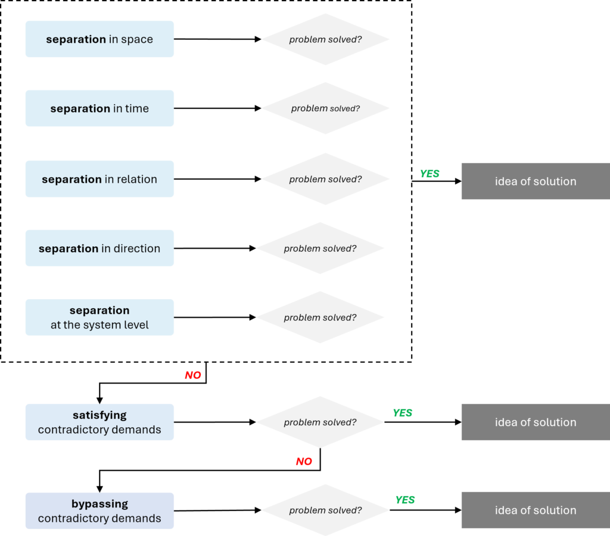
Separating and satisfying contradictory demands lead to specific sets of inventive principles; for bypassing any principle can be applied.
Problems should be modeled in multiple ways. The more problem models are created, the more solution models are generated, which in turn leads to a greater number of ideas.
Each specific physical contradiction represents a unique situation. In some cases, all approaches may work, while in others, only a few – or even just one – may be applicable. If conflicting requirements can be separated in different ways, it is worth exploring all possible variants. Even if separation yields good ideas, it is recommended to also consider satisfying and bypassing approaches.
Separating the contradictory demands
Separating is the most frequently used method. There are five ways to separate contradictory demands:
Separating in space
control question: where?
The approach is applicable if answering the control question reveals that the contradictory demands are applied to different places in space.
The recommended inventive principles to separate the contradictory demands in space:
Principle 1. Segmentation
- Divide the object into independent parts.
- Make the object easy to disassemble.
- Increase the degree of fragmentation or segmentation of the object.
Principle 2. Separation
- Separate any interfering parts or properties from the object, or single out the only necessary part (or property) of the object.
Principle 3. Local quality
- Change the object’s structure from uniform to non-uniform, change the external environment (or external influence) from uniform to non-uniform.
- Ensure that each part of the object functions in conditions most suitable for its operation.
- Ensure that each part of the object fulfills a different and useful function.
Principle 7. “Nested doll”
- Place one object inside another; place each object, in turn, inside the other.
- Pass one part through a cavity in the other.
Principle 4. Asymmetry
- Change the shape of the object from symmetrical to asymmetrical.
- If the object is asymmetrical, increase its degree of asymmetry.
Principle 17. Transition to another dimension
- Move the object in two- or three-dimensional space.
- Use a multistory arrangement for the objects instead of a single-story arrangement.
- Tilt or re-orient the object, put it on its side.
- Use a different side of the given area.
Separating in time
control question: when?
It is applicable if answering the control question reveals that the contradictory demands are required at different moments in time.
The recommended inventive principles to separate the contradictory demands in time:
Principle 9. Preliminary anti-action
- If it is necessary to perform an action with both harmful and useful effects, a counteraction should be performed first to control the harmful effects.
- Create stresses in the object in advance to oppose known undesirable working stresses later on.
Principle 10. Preliminary action
- Make any changes in the object (either fully or partially) before such changes are required.
- Pre-arrange objects so that they can be quickly activated without losing time delivering them.
Principle 11. In-advance cushioning
- Prepare an emergency equipment beforehand to compensate for any objects that are not reliable.
Principle 15. Dynamization
- Allow changes (or design such changes) in the characteristics of the object, external environment, or process that optimize the object, or that optimize the operating conditions.
- Divide the object into parts capable of moving relative to each other.
- If the object (or process) is rigid or inflexible, make it movable or adaptable.
Principle 34. Discarding and recovering
- Eliminate portions of the object that have fulfilled their function (discard by dissolving, evaporating, etc.) or modify these during the operation of the object.
- Conversely, restore consumable parts of the object during the operation of the object.
Separating in relation (conditions)
control question: for whom / for what object?**
This approach is applicable if answering the control question reveals that the contradictory demands are applied for different objects.
The recommended inventive principles to separate the contradictory demands in relation:
Principle 3. Local quality
- Change the object’s structure from uniform to non-uniform, change the external environment (or external influence) from uniform to non-uniform.
- Ensure that each part of the object functions in conditions most suitable for its operation.
- Ensure that each part of the object fulfills a different and useful function.
Principle 17. Transition to another dimension
- Move the object in two- or three-dimensional space.
- Use a multistory arrangement for the objects instead of a single-story arrangement.
- Tilt or re-orient the object, put it on its side.
- Use a different side of the given area.
Principle 19. Periodic action
- Instead of continuous action, use periodic or pulsating actions.
- If an action is already periodic, change the periodic magnitude or frequency.
- Use pauses between impulses to perform a different action.
Principle 31. Porous materials
- Make the object porous or add porous elements (inserts, coatings, etc.).
- If the object is already porous, use the pores to introduce a useful substance or function.
Principle 32. Color changes
- Change the color of the object or its external environment.
- Change the transparency of the object or its external environment.
Principle 40. Composite materials
- Change from uniform to composite (multiple) materials.
Separating in direction
control question: in what direction?**
It is applicable if answering the control question reveals that the contradictory demands are applied for different directions of action.
The recommended inventive principles to separate the contradictory demands in direction:
Principle 4. Asymmetry
- Change the shape of the object from symmetrical to asymmetrical.
- If the object is asymmetrical, increase its degree of asymmetry.
Principle 14. Spheroidality – curvature
- Instead of using rectilinear parts, surfaces, or forms, use curvilinear ones; change from flat surfaces to spherical ones; from cube-shaped (paralllelepiped) parts to ball-shaped structures.
- Use rollers, balls, spirals, domes.
- Go from linear to rotary motion; use centrifugal forces.
Principle 17. Transition to another dimension
- Move the object in two- or three-dimensional space.
- Use a multistory arrangement for the objects instead of a single-story arrangement.
- Tilt or re-orient the object, put it on its side.
- Use a different side of the given area.
Principle 32. Color changes
- Change the color of the object or its external environment.
- Change the transparency of the object or its external environment.
Principle 35. Parameter changes
- Change the object’s physical state (e.g., to a gas, liquid, or solid).
- Change the concentration or consistency.
- Change the degree of flexibility.
- Change the temperature.
Principle 40. Composite materials
- Change from uniform to composite (multiple) materials.
Separating at the system level
There is no control question related to separation at the system level. This approach may always be applied
The recommended inventive principles to separate the contradictory demands at the system level:
Principle 1. Segmentation
- Divide the object into independent parts.
- Make the object easy to disassemble.
- Increase the degree of fragmentation or segmentation of the object.
Principle 5. Merging
- Bring closer together (or merge) identical or similar objects, assemble identical or similar parts to perform parallel operations.
- Make operations contiguous or parallel; bring them together in time.
Principle 12. Equipotentiality
- In any potential field, limit position changes (e.g., change operating conditions to eliminate the need to raise or lower objects in a gravity field).
Principle 33. Homogeneity
- Make objects interacting with any given object of the same material (or material with identical properties).
Satisfying the contradictory demands
Satisfying contradictory demands is much less frequently used then separation.
As the name suggests, in this approach – similarly to separation – both demands are also met, but now simultaneously. Recommendations for this approach are often related to the use of so-called smart materials and scientific effects.
The recommended inventive principles to satisfy the contradictory demands:
Principle 13. The other way around
- Invert the action(s) taken to solve the problem (e.g., instead of cooling the object, heat it).
- Make movable parts (or the external environment) stationary, and stationary parts movable.
- Turn the object (or process) “upside down”.
Principle 28. Mechanics substitution
- Replace mechanical means with sensory (optical, acoustic, taste or smell) means.
- Use electric, magnetic and electromagnetic fields to interact with the object.
- Change from static to movable fields, from unstructured fields to structured.
- Use fields in conjunction with field-activated (e.g., ferromagnetic) particles.
Principle 35. Parameter changes
- Change the object’s physical state (e.g., to a gas, liquid, or solid).
- Change the concentration or consistency.
- Change the degree of flexibility.
- Change the temperature.
Principle 36. Phase transitions
- Use phenomena occurring during phase transitions (e.g., volume changes, loss or absorption of heat, etc.).
Principle 37. Thermal expansion
- Use thermal expansion (or contraction) of materials.
- If thermal expansion is being used, use multiple materials with different thermal expansion coefficients.
Principle 38. Strong oxidants
- Replace air with oxygen-enriched air.
- Replace enriched air with pure oxygen.
- Expose air or oxygen to ionizing radiation.
- Use ozonized oxygen.
- Replace ozonized (or ionized) oxygen with ozone.
Principle 39. Inert atmosphere
- Replace a normal environment with an inert one.
- Add neutral parts, or inert additives to the object.
Bypassing the contradictory demands
Bypassing contradictory demands is the least used method of resolving physical contradictions. It is usually used when separating or satisfying contradictory demands doesn’t work.
The approach is based on changing the engineering system so that the physical contradiction becomes irrelevant and does not need to be resolved anymore, e.g. finding different ways of performing the desired function.
There are no inventive principles assigned to this method, which means that all principles can be applied.
Inventive principle
Inventive principle
Inventive principle is an abstract model of a solution that provides generalized recommendations for modifying the system to solve the problem formulated as the contradiction.
Overview
The inventive principles are proposed models of solutions for both engineering contradictions and physical contradictions. Depending on the type of contradiction, and thus the tool used to process it, a different set of principles will be proposed to solve the problem. In other words, the contradiction matrix will lead to different solution models than the algorithm for resolving physical contradictions.
The concept of inventive principles originated from G. Altshuller’s extensive research into patents across various engineering fields. By focusing on patents that resolved contradictions rather than those aimed at optimization, Altshuller identified patterns among innovative solutions. Through systematic analysis and classification of thousands of patents, he discovered that problems modeled as similar engineering contradictions often shared conceptually similar solutions. These generalized approaches were distilled and formalized into 40 inventive principles.
40 inventive principles
Principle 1. Segmentation
- Divide the object into independent parts.
- Make the object easy to disassemble.
- Increase the degree of fragmentation or segmentation of the object.
Principle 2. Separation
- Separate any interfering parts or properties from the object, or single out the only necessary part (or property) of the object.
Principle 3. Local quality
- Change the object’s structure from uniform to non-uniform, change the external environment (or external influence) from uniform to non-uniform.
- Ensure that each part of the object functions in conditions most suitable for its operation.
- Ensure that each part of the object fulfills a different and useful function.
Principle 4. Asymmetry
- Change the shape of the object from symmetrical to asymmetrical.
- If the object is asymmetrical, increase its degree of asymmetry.
Principle 5. Merging
- Bring closer together (or merge) identical or similar objects, assemble identical or similar parts to perform parallel operations.
- Make operations contiguous or parallel; bring them together in time.
Principle 6. Universality
- Make a part of the object, or the entire object perform multiple functions; eliminate the need for other parts.
Principle 7. “Nested doll”
- Place one object inside another; place each object, in turn, inside the other.
- Pass one part through a cavity in the other.
Principle 8. Anti-weight
- To compensate for the weight of the object, merge it with other objects that provide some support.
- To compensate for the weight of the object, make it interact with the environment (e.g., use aerodynamic, hydrodynamic, buoyancy, and other forces).
Principle 9. Preliminary anti-action
- If it is necessary to perform an action with both harmful and useful effects, a counteraction should be performed first to control the harmful effects.
- Create stresses in the object in advance to oppose known undesirable working stresses later on.
Principle 10. Preliminary action
- Make any changes in the object (either fully or partially) before such changes are required.
- Pre-arrange objects so that they can be quickly activated without losing time delivering them.
Principle 11. In-advance cushioning
- Prepare an emergency equipment beforehand to compensate for any objects that are not reliable.
Principle 12. Equipotentiality
- In any potential field, limit position changes (e.g., change operating conditions to eliminate the need to raise or lower objects in a gravity field).
Principle 13. The other way around
- Invert the action(s) taken to solve the problem (e.g., instead of cooling the object, heat it).
- Make movable parts (or the external environment) stationary, and stationary parts movable.
- Turn the object (or process) “upside down”.
Principle 14. Spheroidality – curvature
- Instead of using rectilinear parts, surfaces, or forms, use curvilinear ones; change from flat surfaces to spherical ones; from cube-shaped (paralllelepiped) parts to ball-shaped structures.
- Use rollers, balls, spirals, domes.
- Go from linear to rotary motion; use centrifugal forces.
Principle 15. Dynamization
- Allow changes (or design such changes) in the characteristics of the object, external environment, or process that optimize the object, or that optimize the operating conditions.
- Divide the object into parts capable of moving relative to each other.
- If the object (or process) is rigid or inflexible, make it movable or adaptable.
Principle 16. Partial or excessive actions
- If 100% of an effect is hard to achieve using a given method for solving a problem, then by using “lightly less” or “slightly more” of the same method, the problem may be considerably easier to solve.
Principle 17. Transition to another dimension
- Move the object in two- or three-dimensional space.
- Use a multistory arrangement for the objects instead of a single-story arrangement.
- Tilt or re-orient the object, put it on its side.
- Use a different side of the given area.
Principle 18. Mechanical vibration
- Cause the object to oscillate or vibrate.
- Increase its frequency (even up to the ultrasonic).
- Use the object’s resonant frequency.
- Use piezoelectric vibrators instead of mechanical ones.
- Use combined ultrasonic and electromagnetic field oscillations.
Principle 19. Periodic action
- Instead of continuous action, use periodic or pulsating actions.
- If an action is already periodic, change the periodic magnitude or frequency.
- Use pauses between impulses to perform a different action.
Principle 20. Continuity of useful action
- Carry on work continuously; make all parts of the object work at full load, all the time.
- Eliminate all idle or intermittent actions or work.
Principle 21. Skipping
- Conduct a process, or certain stages of it (e.g., destructible, harmful or hazardous operations) at high speed.
Principle 22. “Blessing in disguise”
- Use harmful factors (particularly, effects that are detrimental to the environment or surroundings) in such a way as to achieve a positive effect.
- Eliminate the primary harmful action by adding it to another harmful action to resolve the problem.
- Amplify a harmful factor to such a degree that it is no longer harmful.
Principle 23. Feedback
- Introduce feedback (referring back, cross-checking) to improve a process or an action.
- If feedback is already used, change it.
Principle 24. Intermediary
- Use an intermediary carrier article or intermediary process.
- Merge one object temporarily with another (which can be easily removed).
Principle 25. Self-service
- Make the object serve itself by performing auxiliary helpful functions
- Use waste resources, energy, or substances.
Principle 26. Copying
- Instead of an unavailable, expensive, fragile object, use simpler, inexpensive copies.
- Replace the object or process with optical copies.
- If visible optical copies are already used, move to infrared or ultraviolet copies.
Principle 27. Cheap short-living objects
- Replace an expensive object with a multitude of inexpensive objects that compromise certain qualities (service life, for instance).
Principle 28. Mechanics substitution
- Replace mechanical means with sensory (optical, acoustic, taste or smell) means.
- Use electric, magnetic and electromagnetic fields to interact with the object.
- Change from static to movable fields, from unstructured fields to structured.
- Use fields in conjunction with field-activated (e.g., ferromagnetic) particles.
Principle 29. Pneumatics and hydraulics
- Use gas and liquid parts of the object instead of solid parts (e.g., inflatable, filled with liquids, air cushioned, hydrostatic, hydro-reactive).
Principle 30. Flexible shells and thin films
- Use flexible shells and thin films instead of three-dimensional structures
- Isolate the object from the external environment using flexible shells and thin films.
Principle 31. Porous materials
- Make the object porous or add porous elements (inserts, coatings, etc.).
- If the object is already porous, use the pores to introduce a useful substance or function.
Principle 32. Color changes
- Change the color of the object or its external environment.
- Change the transparency of the object or its external environment.
Principle 33. Homogeneity
- Make objects interacting with any given object of the same material (or material with identical properties).
Principle 34. Discarding and recovering
- Eliminate portions of the object that have fulfilled their function (discard by dissolving, evaporating, etc.) or modify these during the operation of the object.
- Conversely, restore consumable parts of the object during the operation of the object.
Principle 35. Parameter changes
- Change the object’s physical state (e.g., to a gas, liquid, or solid).
- Change the concentration or consistency.
- Change the degree of flexibility.
- Change the temperature.
Principle 36. Phase transitions
- Use phenomena occurring during phase transitions (e.g., volume changes, loss or absorption of heat, etc.).
Principle 37. Thermal expansion
- Use thermal expansion (or contraction) of materials.
- If thermal expansion is being used, use multiple materials with different thermal expansion coefficients.
Principle 38. Strong oxidants
- Replace air with oxygen-enriched air.
- Replace enriched air with pure oxygen.
- Expose air or oxygen to ionizing radiation.
- Use ozonized oxygen.
- Replace ozonized (or ionized) oxygen with ozone.
Principle 39. Inert atmosphere
- Replace a normal environment with an inert one.
- Add neutral parts, or inert additives to the object.
Principle 40. Composite materials
- Change from uniform to composite (multiple) materials.
ARIZ
ARIZ
ARIZ is a problem-solving tool that transforms a complex key problem into a well-defined model of the problem, which can be solved effectively using a wide spectrum of TRIZ tools.
Overview
ARIZ is a Russian acronym of algorithm for inventive problem solving (алгоритм решения изобретательских задач, АРИЗ).
There have been several versions of ARIZ over the years. The last one officially published under Altshuller’s name is ARIZ-85C. Although later versions were developed posthumously, they did not significantly improve the procedure’s effectiveness – some even added unnecessary complexity. As a result, ARIZ-85C remains the official version.
It’s important to keep in mind that in 1985, TRIZ did not yet include the advanced analytical tools available today. Still, Altshuller clearly understood the importance of identifying the right problem to solve, which is why ARIZ-85C already includes several built-in analytical procedures.
click here to read the original text of ARIZ-85C including all the notes and recommendations formulated by Altshuller
click here to download an ARIZ-85C template in editable Word file
For the reader’s convenience, each block of ARIZ has been described in a separate article.
Application of ARIZ
ARIZ is typically used for solving complex key problems that cannot be resolved using other TRIZ methods, in projects where major changes to the system are unacceptable.To highlight the specific nature of these problems, the algorithm introduced the term mini-problem.
The mini-problems a key problems that can arise from various sources, like CECA, trimming, or feature transfer.
Strength of ARIZ
The strength of ARIZ is determined by its distinctive features:
- Focusing on achieving the ideal final result.
- Basing on trends of engineering system evolution.
- Focusing on the system resources.
Focusing on achieving the ideal final result
ARIZ is focused on achieving the ideal final result (IFR) – the best possible solution to a problem, in which the problem is completely eliminated with minimal changes to the system and no deterioration of its parameters.
It’s important not to confuse the concept of IFR with that of the ideal system, as the two are fundamentally different – though often mistakenly used interchangeably. While the ideal system refers to a system that does not exist (it performs the function without taking up space, costing anything, or requiring maintenance), the IFR in ARIZ is about solving a specific problem within an existing system by making only minimal adjustments. The system still exists, takes up space, generates costs, and requires upkeep – but the problem it had is resolved in the most efficient way possible.
Basing on trends of engineering system evolution
Like many other TRIZ tools, ARIZ is built on the trends of engineering system evolution. The algorithm includes steps that directly reflect various trends – such as identifying and eliminating contradictions, aiming for the ideal final result (IFR), focusing on minimal changes to the initial system, or applying the multi-screen approach.
All of these actions are designed to help overcome psychological inertia and lead to the most effective possible solution.
Focusing on the system resources
Making minimal changes to the system means working with resources that are already present within the system and its supersystem. While it might be tempting to introduce new materials, add components, or apply new fields, such changes often come with significant costs. In reality, most systems already contain what’s needed to solve the problem – those resources are simply overlooked. One of ARIZ’s key goals is to uncover them.
To do this, ARIZ works in two directions. First, it narrows focus like a funnel, transforming a broad key problem into a well-defined TRIZ mini-problem. Then, it expands outward, revealing more and more resources hidden within the system and supersystem as the analysis progresses.
Structure of ARIZ
ARIZ is a very well-structured tool. It has the structure of a block-diagram composed of steps, rules, and notes.
Complete algorithm consists of 9 parts organized into three main blocks. Each part consists of several sub-steps. The general structure is the following:
Block 1: Restructuring the original problem
Part 1. Analyze the system
Part 2. Analyze the problem model.
Part 3. Define the ideal final result and formulate the physical contradiction.
Block 2: Removing the physical contradiction
Part 4. Resolve the physical contradiction.
Part 5. Apply the knowledge base, scientific effects, standard inventive solutions, contradiction matrix, etc.
Part 6. Change the mini-problem.
Block 3: Analyzing the solution
Part 7. Review the solution and analyze removal of the physical contradiction.
Part 8. Develop maximum usage of the solution.
Part 9. Review all the stages in ARIZ in a “real time” application.
Articles
- Conflicting pair
- Product
- Tool
- ARIZ Block 1: Restructuring the original problem
- X-factor
- Operating zone
- Operating time
- Mini-problem
- Ideal final result
ARIZ Block 1: Restructuring the original problem
ARIZ Block 1: Restructuring the original problem
Part 1. Analyze the system
In general, part 1 is about the analysis of the key problem. It includes seven steps.
It begins with identifying main function of the system, as wel as components of the system and its supersystem. After that the engineering problem is modelled as two alternative (inverted) engineering contradictions and the mini-problem is formulated.
The next steps help determine the tool(s) and the product(s) in the analyzed conflict. The two states of them are also identified. Next, graphical models of the contradictions are created. Finally, the base contradiction is selected, intensified, and the problem is formulated.
Step 1.1. Formulate the mini-problem
The first step of ARIZ is to define the mini-problem by identifying the system and modeling the problem as engineering contradictions (EC).
In ARIZ, the system may differ from the one analyzed earlier during function analysis. Here, the focus is on the key problem, so the system includes only components directly related to it. However, it is recommended that not only technological components of the system be listed but also the “natural” ones that interact with it. For example, in the problem of protecting a telescope antenna, natural objects like lightning or incoming radio waves (emitted by celestial bodies) should also be considered.
The key disadvantages, identified earlier through CECA, help pinpoint the root causes, which may lie deep within or outside the original system. Eliminating these root causes defines the key problem, and the system in ARIZ refers to the area where this problem occurs.
To define the system, its main function is specified, and essential components of both the system and supersystem are listed. Based on this, two types of engineering contradictions are formulated: EC-1 (direct) and EC-2 (inverted). Together, they form the foundation of the mini-problem.
When formulating contradictions, make sure to include key parameters in the IF, THEN, and BUT lines. It’s also helpful to keep the function format in the THEN and BUT lines, showing how the function carrier affects a specific parameter of the function object. This clarity will support later steps in the process.
Sometimes the problem situation involves only the product – the tool is absent. In such cases, there is no clear technical contradiction, but one can still be formulated by considering two states of the product, even if one of those states seems impossible to achieve.
For example – how can we observe tiny particles suspended in a transparent liquid with the naked eye, if the particles are so small that light flows around them?
TC-1: The liquid remains transparent because the particles are small, but they cannot be seen with the naked eye.
TC-2: Larger particles are easier to observe, but they make the liquid no longer transparent, which is an unacceptable outcome.
Since we cannot change the product, we will proceed only with TC-1, but we also note that TC-2 adds a requirement to the product: The particles must remain small (to keep the liquid transparent) and simultaneously become large (so they can be seen).
Step 1.2. Determine the conflicting pair
Step 1.2 is used to identify the tool(s) and product(s) that form the conflicting pair.
In this step, we also identify the states in which the tool operates. These states refer to the properties, features, or parameters specified in the IF line of the contradictions formulated in step 1.1:
- state 1 can be found in the direct contradiction,
- state 2 appears in the inverted contradiction.
Step 1.3. Create graphical models of the engineering contradictions
In Step 1.3, the problem is presented in graphic form. Graphs are created for both EC-1 and EC-2.
The graphs are built using symbols familiar from tools such as function analysis and substance-field modeling.
It is important to note that the purpose of the diagrams is not to depict functions, but to illustrate engineering contradictions.
The diagram must clearly show both the useful and the harmful action. In practice, this means there should be two arrows – one “good” and one “bad.” If both arrows represent the same type of effect (e.g. both are useful, or both are harmful/insufficient/excessive), it indicates a mistake that needs to be corrected.
The conflicting pair shown in the illustration typically consists of two components, but in some cases it may involve three – either two products and one tool, or one product and two tools.
Step 1.4. Select a contradiction for further analysis (basic contradiction)
EC-1 and EC-2 model the same situation, but they represent completely different problems.
To achieve the project goal, both problems need to be addressed, but it’s not possible to deal with them simultaneously. At this stage, we must choose which engineering contradiction to focus on – this becomes the basic contradiction.
Altshuller recommended selecting the contradiction in which the system’s main function is performed. This approach is quite natural, as the goal is to solve the problem with minimal changes to the system. However, experience shows that there are cases where engineers are open to more significant modifications. In such situations, choosing the inverted contradiction may be the better option.
Importantly, selecting one contradiction at this point does not mean discarding the other one. If the solutions developed in the next steps are not satisfactory, the algorithm itself will prompt a return to this step and suggest reconsidering the second contradiction.
Step 1.5. Intensify the conflict
This step has been introduced to help overcome psychological inertia, including the natural tendency of engineers to focus on optimization. While optimization isn’t inherently bad, it is not desirable during the conceptual phase of TRIZ-based projects.
To intensify the contradiction, the parameter from the line IF is pushed to its absolute extreme. If something was supposed to be light, it should now weigh nothing; if it was supposed to be small, it should now cease to exist entirely.
Strengthening this parameter will require corresponding adjustments to the THEN and BUT positions in the contradiction model.
Important! From this point onward, we will be working exclusively with the intensified contradiction in ARIZ.
Step 1.6. Formulate the problem model
In step 1.6, we use all the previous steps and formulate an ARIZ problem model. The ARIZ problem model should include:
- the conflicting pair,
- the intensified definition of the conflict, and
- the X-factor.
Step 1.7. Apply standard inventive solutions
In Step 1.7, based on the diagrams created in Step 1.3, substance-field models are constructed and standard inventive solutions are applied.
The entire analysis conducted in Part 1, along with the construction of the problem model, results in a significant refinement of the problem.
Implementation of step 1.7 is not mandatory and can be skipped. Regardless, standard inventive solutions application will reappear in part 5 of ARIZ.
Part 2. Analyzing the problem model
Part 2 of ARIZ focuses on analyzing the resources available within the system and its supersystem.
ARIZ is designed for projects that allow only minimal changes to the system. This usually rules out the introduction of new resources, which makes identifying existing resources absolutely critical.
Part 2 consists of three steps, during which we identify the main types of resources considered in ARIZ:
- space resources,
- time resources, and
- substance and field resources of the system and its supersystem, including their parameters.
Step 2.1. Define the operating zone
In Step 2.1, the spatial resources of the system are identified. The operating zone (also called operating space) refers to the area where the conflict identified in the problem model occurs.
According to the previously formulated contradiction, the system faces two opposing requirements. One must be fulfilled in operating zone 1 (OZ-1), the other in operating zone 2 (OZ-2). If these zones are separated, the contradiction may be resolved by separating the contradictory demands in space. If the zones overlap, then other methods must be explored to resolve the contradiction.
Step 2.2. Define the operating time
In this step, the time resources of the system are identified.
The operating time is most simply defined as the time in which the conflict identified in the problem model occurs. According to the contradiction, the system faces two opposing requirements. Operating time 1 (OT-1) is the period during which the first requirement of the system is met, while operating time 2 (OT-2) is the period during which the second requirement occurs.
It is essential to determine whether these zones are separated or overlapping. If these times are different, the contradiction can be resolved by separating the contradictory requirements in time. If the times overlap, the separation is not possible hence a different strategy is required.
Step 2.3. Define the substance-field resources (SFR)
In the final step of Part 2, the focus shifts to the analysis of substance and field resources – both those already present and those that can be easily accessed or introduced.
The resources under consideration include:
- internal resources:
- product resources, and
- tool resources,
- external resources.
During resource analysis, we are interested not only in the presence of a substance or field. Special attention is given to their parameters or features, which are considered particularly valuable in ARIZ. When creating a list of resources, everything that comes to your mind should be included, as any resource could be a potential candidate for solving the problem.
The internal resources of the conflicting pair are the first to be analyzed. Since both the tool and the product are already located in the conflict zone, their associated resources are also present – no additional effort is required to deliver them.
Compared to the tool, the product’s resources may be more limited in terms of availability. While we often have the freedom to modify the tool as needed, making changes to the product may be subject to design, functional, or business constraints.
When it comes to external resources, the search begins in the immediate surroundings of the conflict – the operating zone. However, it is beneficial to expand the search area, as there may be low-cost or even free resources available in the supersystem. Nearly every engineering project has access to universal resources like air and gravity. Additionally, nearby systems may generate waste or possess surplus materials or fields that could be valuable for solving the problem.
Part 3. Defining the ideal final result and formulating the physical contradiction
Part 3 of ARIZ focuses on the ideal final result (IFR) and identifying physical contradictions that hinder achieving it.
Step 3.1. Formulate IFR
In Step 3.1, we return to the requirements defined for the X-factor based on the intensified technical contradiction from Step 1.6. Now, we can supplement these requirements with those identified in Steps 2.1 and 2.2, relating to the operating zone and operating time.
To formulate the ideal final result (IFR), a template is typically used. However, in some projects, applying the template word-for-word may result in a confusing or unclear statement. In such cases, it’s recommended to break the text into several separate sentences to clearly and effectively convey the intended meaning.
Step 3.2. Formulate the intensified ideal final result
At this stage, the X-factor from Step 3.1 is replaced with a specific available resource.
Keep in mind that the only resources that may be used to replace the X-factor are those identified in Step 2.3 – using any other resources is not in line with ARIZ. However, the replacement can be a single resource or a combination of several.
It is recommended to consider SFRs in the following order:
- SFR of the tool,
- SFR of the supersystem,
- other external SFR,
- SFR of the product (if not restricted).
Modifications to the product are usually significantly restricted or even completely prohibited. However, there are rare situations where the product may be allowed to change on its own, change temporarily, or be combined with a void, etc. SFR of the product may be considered only if such modifications are explicitly permitted.
The list of resources identified in Part 2 is usually quite long. Considering each one as a potential X-factor would significantly extend the project timeline. That’s why in Step 3.2, it is recommended to start by considering 5 to 6 selected resources. If using them does not lead to satisfactory results, you can return to Step 3.2 later in the ARIZ process to explore other resources.
Step 3.3. Define the physical contradiction on macro-level
The intensified ideal final result (IFR) concepts developed in Step 3.2 usually do not yet solve the mini-problem. It is highly likely that the chosen resources are prevented from acting effectively as X-factors due to underlying physical contradictions. Identifying these contradictions enables us to attempt to resolve them.
For formulating the physical contradictions here, we usually use the following pattern:
The parameter [specify] of the resource [specify] should be value 1 [specify] to eliminate the harmful action [specify] and/or value 2 [specify] to provide the useful function [specify].
When approaching the formulation of physical contradictions, we typically encounter one of the following three scenarios:
- The contradiction can be clearly formulated and processed.
- After formulating the contradiction, it turns out that the selected resource has no influence or connection to the parameters that need to be changed. At this stage, the resource is set aside – it may be reconsidered later in the ARIZ process.
- It becomes clear that only one demand of the contradiction is justified. This means the contradiction does not actually exist – and we’ve just found the solution.
The physical contradictions formulated in Step 3.2 represent models of entirely new problems that had not been previously identified – yet they are precisely what gives ARIZ its distinctive power.
Conflicting pair
Conflicting pair
Conflicting pair is a pair of components, the tool(s) and the product(s), interaction between which causes a conflict that prevents reaching the required result.
Overview
Conflicting pair is a term used in ARIZ.
The terms of the tool and the product are specific to ARIZ but closely mirror the function carrier and function object from function analysis. The product corresponds to the target component – the object of the system’s main function – while the tool is the component that performs this function. This analogy makes it easier to quickly identify the conflicting pair in the system.
A conflicting pair consists of two or three components.
For example, in the process of sealing glass ampoules containing medicine, the flame, the ampoule, and the medicine form a conflicting pair. The flame melts the ampoule tip, but if it’s too strong, it damages the medicine; if it’s too weak, it fails to seal the ampoule properly. In this case, the pair includes one tool (the flame) and two products (the ampoule and the medicine). In other scenarios, a conflicting pair may involve two tools and one product.
Mini-problem
Mini-problem
Mini-problem is a problem whose solution is limited by constraints against significant changes to the analyzed engineering system.
Overview
Mini-problem is a concept used in ARIZ.
The prefix “mini” does not imply that the problem is small, but rather that its solution must involve only minimal changes to the system.
A mini-problem is created by taking the original problem situation and adding a constraint: everything in the system must stay the same or become simpler, while the desired action (or property) appears, or the harmful action (or property) disappears. This transformation doesn’t mean we’re trying to solve a “smaller” problem. Instead, adding this extra requirement – achieving the desired result without changing the system – sharpens the conflict and blocks any path toward compromise right from the start. This is achieved by making use of resources that already exist – either within the system or in its surrounding environment.
In engineering projects, this approach is often a necessary condition for balancing business interests with the ambitions of engineers.
The mini-problems a key problems that can arise from different sources, like CECA, trimming, or feature transfer.
Operating time
Operating time
Operating time is a time interval, when one of the contradiction requirements must be met.
Overview
The operating time is a concept used in ARIZ. It is defined in Step 2.2 of the algorithm. Its purpose is to identify the time resources of the system.
The operating time is most simply defined as the time in which the conflict identified in the problem model occurs.
According to the previously formulated contradiction, the system faces two opposing requirements. Operating time 1 (OT-1) is the period during which the first requirement of the system is met, while operating time 2 (OT-2) is the period during which the second requirement occurs.
It is essential to determine whether these zones are separated or overlapping.
If these times are different, the contradiction can be resolved by separating the contradictory requirements in time. If the times overlap, the separation is not possible hence a different strategy is required.
Creating sketches that clearly highlight OT-1 and OT-2 is recommended. In fact, Altshuller considered such sketches mandatory during this step.
Altshuller recommended a deeper time analysis by examining three distinct phases:
- before the conflict,
- during the conflict, and
- after the conflict.
Analysing the first phase enables the implementation of preventive measures ahead of time. Analysing the third phase allows for actions aimed at eliminating the consequences of the conflict.
Although in some projects the before and/or after phases may not be applicable, considering this structure can help identify a broader range of time-related resources, often leading to more effective and robust solutions.
Operating zone
Operating zone
Operating zone is a physical space, where one of the contradiction requirements must be met.
Overview
The operating zone is a concept used in ARIZ. It is defined in Step 2.1 of the algorithm. Its purpose is to identify the spatial resources of the system.
The operating zone – also known as the operating space – is most simply defined as the area in which the conflict identified in the problem model occurs.
According to the previously formulated contradiction, the system faces two opposing requirements. These requirements must be fulfilled in specific areas, referred to as operating zone 1 (OZ-1) and operating zone 2 (OZ-2).
It is essential to determine whether these zones are separated or overlapping.
If they are located in different places, the problem might be resolved by separating the contradictory demands in space. If the zones overlap, the separation is not possible hence a different strategy is required.
Creating sketches that clearly highlight OZ-1 and OZ-2 is recommended. In fact, Altshuller considered such sketches mandatory during this step.
Product
Product
Product is the element that needs to be processed (manufactured, moved, changed, improved, protected from a harmful influence, revealed, measured etc.) according to the problem conditions.
Overview
The term of product is characteristic for ARIZ – together with the tool, it forms what is known as a conflicting pair, which is identified in Step 1.2 of the algorithm.
The product can be directly compared to the target component, which is the object of the main function of the system in function analysis. Such an analogy significantly facilitates it’s quick identification.
The difference in terminology between ARIZ and function analysis stems from the fact that, in 1985 – when the final version of ARIZ was developed – function analysis had not yet been officially introduced into the TRIZ toolkit. Even after it became a standard TRIZ tool, Altshuller’s original terminology was preserved in ARIZ to maintain consistency with the original structure.
To identify the product move on to the main function of the system.
Tool
Tool
Tool is an object directly interacting (conflicting) with the product in contradictions identified in part 1 of ARIZ.
Overview
The term of tool is characteristic for ARIZ – together with the product, it forms what is known as a conflicting pair, which is identified in Step 1.2 of the algorithm.
The tool is the element that directly interacts with the product, such as, for example, a mill rather than a milling machine, or a flame rather than a burner. Sometimes, a specific part of the environment can be considered as a tool. The standard parts from which the product is assembled can also be considered as a tool.
In terms of state-of-the-art TRIZ, the tool is the component of the system performing main function. It immediately evokes associations with the carrier of the function that significantly facilitates quick identification of it. The difference in terminology between ARIZ and function analysis stems from the fact that, in 1985 – when the final version of ARIZ was developed – function analysis had not yet been officially introduced into the TRIZ toolkit. Even after it became a standard TRIZ tool, Altshuller’s original terminology was preserved in ARIZ to maintain consistency with the original structure.
To identify the tool, refer to the line IF of the contradictions.
X-factor
X-factor
X-factor is any change in the engineering system (e.g., change in its components, parameters, etc.) that should be incorporated into the system in order to solve a problem.
Overview
X-factor is a term used in ARIZ. It refers to any entity that should be introduced into the system to help solve the problem.
The X-factor can be any resource identified in Part 2 of ARIZ, or a combination of several resources. It may be a substance, a field, a parameter, time, space, or any other characteristic – whether from the system or its supersystem.
Examples include a temperature change, a phase transition, a change in color or material, and more. The role of the X-factor is to preserve what is desirable in the contradiction while eliminating what is undesirable.
The requirements for the X-factor are defined in Step 1.6 of ARIZ.
Initially, the term X-element was used in ARIZ. However, since the word element is polysemantic in many languages, it has been replaced with X-factor in state-of-the-art TRIZ.
Ideal final result
Ideal final result
Ideal final result (IFR) is a model of the best solution to an inventive problem, whereby the problem is fully eliminated with minimal changes to the system and without any deterioration of system parameters.
Overview
IFR is a concept introduced in ARIZ where it helps in setting a clear, unambiguous goal that guides the subsequent steps. Formulating it is one of crucial steps of the algorithm.
With the IFR in mind, ARIZ uses various TRIZ tools and principles to systematically eliminate contradictions and develop innovative solutions.
Key features
- The IFR aims to achieve the maximum benefit for a system with the least use of resources, including time, money, energy, and materials.
- Achieving IFR must not introduce new problems or side effects. It should resolve the issue without creating additional challenges.
- IFR usually simplifies the system rather than complicate it. This often involves reducing the number of components or steps required to achieve the desired outcome. It often incorporates self-regulating and self-maintaining aspects, meaning the system requires little to no external intervention to function optimally.
Difference between IFR and ideal system
IFR is sometimes confused with an ideal system. These concepts are significantly different and it is a major mistake to equate them. IFR is is a term used in ARIZ. It is a model of the best solution to a specific problem, whereby the problem is fully eliminated with minimal changes to the system and without any deterioration of system parameters. However, the system exists, occupies space, incurs costs, requires maintenance, etc. The ideal system referes to the system with infinite value. It has no components or associated costs, but still delivers the intended function(s). In other words, the system does not exist, but its main function is performed.
Function-oriented search (FOS)
Function-oriented search (FOS)
Function-oriented search (FOS) is a problem-solving tool based upon identifying existing technologies worldwide, using function criteria.
Clone problems application
Clone problems application
Clone problems application is a problem- solving tool that generalizes the approach to solving one problem and applies the approach to solving another problem.
Database of scientific effects
Database of scientific effects
Database of scientific effects is a problem-solving tool used to solve key problems, modeled as functions. It is a collection of effects and scientific phenomena from various fields (physics, chemistry, biology, etc.), organized in accordance with a function-oriented and resource-oriented taxonomy (rather than topics).